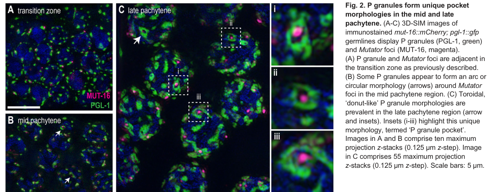

PGL-1 is an RNA-binding P-granule scaffold in Caenorhabditis elegans germ cells. Self-association and recruitment of RNA and protein partners help organize germ granules; PGL-1 directly binds the translation initiation factor IFE-1 and supports its granule localization. PGL-1 also promotes FBF-2 recruitment and RNA repression, and its assembly supports WAGO-1-dependent repression of tethered reporter mRNA. Its central dimerization domain also has guanosine-specific single-stranded RNA endonuclease activity in vitro, although the native substrates and physiological role of that catalysis remain unresolved. PGL-1 supports germline proliferation, gametogenesis and fertility, with temperature-sensitive defects and partial redundancy with PGL-3. It also suppresses excessive apoptosis and regulates CED-4 protein levels and SIR-2.1 localization. PGL-1 is a constituent of cytoplasmic germ granules, including perinuclear granules in the adult germline.
| GO Term | Evidence | Action | Reason |
|---|---|---|---|
|
GO:0003724
RNA helicase activity
|
IBA
GO_REF:0000033 |
UNDECIDED |
Summary: Inherited RNA helicase activity remains unresolved against the target-specific PGL structural evidence.
Reason: The exact Q9TZQ3/PTN002773363 leaf really descends from helicase IBD PTN002774595, without a known helicase-loss node on its path. Two experimentally characterized PGL dimerization domains and the absence of conventional DEAD-box patterns create a specific conflict with its DDX39-like placement. The focused OpenScientist report supports that architecture difference, but overstates it as a direct helicase refutation: its strict control patterns need correction, the structures cover domains rather than full-length protein, and the 2016 experiments assay RNase cleavage, not ATP-driven unwinding. Live GO:0003724 requires ATP-driven unwinding. The reported GAR1 classification is only a 629–728 RGG-tail match, not a verified full-protein reassignment or misgraft. Retain UNDECIDED after completed report review; curator inspection of the actual MSA/sequence placement and a direct unwinding assay remain discriminating follow-ups.
Propagation Review
Root cause:
UNRESOLVED
Sources checked:
PANTHER:PTN002774595
UNRESOLVED
Exact positive descent remains verified. PGL domain structures and the reproduced motif differences raise a concrete alignment/identity question for its DDX39-like placement. Neither the partial GAR1-tail match nor the report establishes a misgraft or a direct negative helicase assay.
Supporting Evidence:
file:worm/pgl-1/pgl-1-paint-lineage.md
This is a real positive ancestry, not an off-clade target or a missing-source failure.
PMID:26787882
PGL-1 DD has a novel 13 α-helix fold that creates a positively charged channel as a homodimer.
file:worm/pgl-1/pgl-1-bioinformatics/RESULTS.md
PGL-1 lacks all five tested patterns, including versions allowing the actual GLH-1
residues.
file:worm/pgl-1/pgl-1-report-assessment.md
No direct helicase-negative assay is reported in
these Results or Methods.
file:worm/pgl-1/pgl-1-hypotheses/pgl-fold-and-inherited-helicase-rna-processing/openscientist.md
This would convert the sequence/structure-based helicase refutation into a direct negative result.
|
|
GO:0003729
mRNA binding
|
IBA
GO_REF:0000033 |
ACCEPT |
Summary: PGL-1 retains mRNA binding as an inherited RNA-recognition function.
Reason: The exact target descends from mRNA-binding IBD PTN002776867. PGL RNA-binding and RNA recruitment to granules are independently established. This term does not require preference for mRNA over every other RNA class; absence of that selectivity is not a reason to replace it with generic RNA binding. The unresolved helicase architecture does not contradict mRNA binding itself.
Supporting Evidence:
file:worm/pgl-1/pgl-1-paint-lineage.md
The target descends from PTN002776867 (mRNA binding), PTN002774595 (RNA helicase),
PMID:21402787
PGL proteins autonomously form RNP granules that contain endogenous RNA, PABP, and certain coexpressed C. elegans P-granule components.
|
|
GO:0000398
mRNA splicing, via spliceosome
|
IBA
GO_REF:0000033 |
UNDECIDED |
Summary: Inherited mRNA splicing, via spliceosome remains unresolved against the target-specific PGL structural evidence.
Reason: The exact target descends from positive spliceosomal-process IBD PTN002776405. Its experimentally characterized PGL scaffold architecture conflicts with the conventional DDX39-like family placement and warrants an MSA/sequence audit, but no spliceosomal contribution has been directly refuted. The focused report acknowledges untested noncatalytic participation, then recommends rejection from absence of target experiments and cytoplasmic localization; those are insufficient grounds to negate an inherited process. The later primary study establishes scaffold-dependent reporter repression, with WAGO-1 required for full repression, rather than testing splicing. That positive post-transcriptional role neither proves nor excludes a spliceosomal role. Retain UNDECIDED for the concrete placement/function conflict after report incorporation, not because an IBA lacks target-specific experimental duplication.
Propagation Review
Root cause:
UNRESOLVED
Sources checked:
PANTHER:PTN002776405
UNRESOLVED
Positive descent is established. The target-domain/DDX39-placement discrepancy is unresolved, but loss of helicase catalysis would not exclude a noncatalytic spliceosomal role. The report supplies no direct negative splicing assay.
Supporting Evidence:
file:worm/pgl-1/pgl-1-paint-lineage.md
This is a real positive ancestry, not an off-clade target or a missing-source failure.
PMID:26787882
PGL-1 DD has a novel 13 α-helix fold that creates a positively charged channel as a homodimer.
file:worm/pgl-1/pgl-1-hypotheses/pgl-fold-and-inherited-helicase-rna-processing/openscientist.md
Noncatalytic moonlighting is untested, not disproven.
file:worm/pgl-1/pgl-1-report-assessment.md
The unresolved issue is the alignment
and sequence identity supporting this actual placement, not donor number.
PMID:33579952
These results also provide direct evidence that granule formation alone is not sufficient for mRNA regulation
|
|
GO:0006406
mRNA export from nucleus
|
IBA
GO_REF:0000033 |
UNDECIDED |
Summary: Inherited mRNA export from nucleus remains unresolved against the target-specific PGL structural evidence.
Reason: The exact target inherits mRNA export from positive IBD PTN002776405. PGL-specific structural architecture still requires reconciliation with this DDX39-like placement. The focused report does not resolve that alignment/identity issue, and its claim that export work must occur on the inner nuclear face is too restrictive: GO:0006406 covers directed movement to the cytoplasm. P granules receive newly exported transcripts, and full PMID:22991439 discusses their continuity with the pore environment while demonstrating PGL-1-dependent FBF-2 localization and efficient mRNA binding. Those are compatible contextual observations, not a direct PGL-1 export assay; cytoplasmic/perinuclear localization cannot refute export participation. Retain UNDECIDED for the specific unresolved placement and process contribution, assessed independently from helicase activity and without a duplicate provider request.
Propagation Review
Root cause:
UNRESOLVED
Sources checked:
PANTHER:PTN002776405
UNRESOLVED
The target lies below this positive export node. A PGL structural/sequence-placement discrepancy remains, but the partial GAR1 match does not identify a misgraft. Export at the cytoplasmic pore interface remains possible; neither missing target assays nor loss of catalytic helicase activity is a process-level refutation.
Supporting Evidence:
file:worm/pgl-1/pgl-1-paint-lineage.md
This is a real positive ancestry, not an off-clade target or a missing-source failure.
PMID:26787882
PGL-1 DD has a novel 13 α-helix fold that creates a positively charged channel as a homodimer.
PMID:22991439
P granules are major sites of RNA export from the nucleus
PMID:20223759
newly exported mRNAs are collected prior to their release to the general cytoplasm
file:worm/pgl-1/pgl-1-hypotheses/pgl-fold-and-inherited-helicase-rna-processing/openscientist.md
Noncatalytic moonlighting is untested, not disproven.
file:worm/pgl-1/pgl-1-report-assessment.md
These observations do not
prove that PGL-1 executes export, but cytoplasmic localization does not refute it.
|
|
GO:0003723
RNA binding
|
IEA
GO_REF:0000043 |
ACCEPT |
Summary: RNA binding is a core function of PGL-1 mediated by its RGG repeats. The protein binds RNA to recruit it into P granules and also has ribonuclease activity that requires RNA binding. This annotation is well-supported despite being IEA.
Reason: PGL-1 contains RGG repeats that are well-characterized RNA-binding motifs. The protein recruits RNA into P granules and has demonstrated ribonuclease activity, both requiring RNA binding capability. This is a fundamental molecular function of the protein.
Supporting Evidence:
PMID:21402787
an RGG box for recruiting RNA and RNA-binding proteins
|
|
GO:0004518
nuclease activity
|
IEA
GO_REF:0000043 |
ACCEPT |
Summary: The broad nuclease annotation is consistent with directly demonstrated RNA endonuclease activity.
Reason: PMID:26787882 establishes guanosine-specific single-stranded RNA endonucleolysis. Nuclease and endonuclease are true broader activities; a more specific retained term does not make the electronic annotation biologically incorrect.
Supporting Evidence:
PMID:26787882
PGL-1 DD is a guanosine-specific, single-stranded endonuclease
|
|
GO:0004519
endonuclease activity
|
IEA
GO_REF:0000043 |
ACCEPT |
Summary: The broad nuclease annotation is consistent with directly demonstrated RNA endonuclease activity.
Reason: PMID:26787882 establishes guanosine-specific single-stranded RNA endonucleolysis. Nuclease and endonuclease are true broader activities; a more specific retained term does not make the electronic annotation biologically incorrect.
Supporting Evidence:
PMID:26787882
PGL-1 DD is a guanosine-specific, single-stranded endonuclease
|
|
GO:0016787
hydrolase activity
|
IEA
GO_REF:0000043 |
ACCEPT |
Summary: The assigned overall guanyl-RNase reaction supports broad hydrolase activity.
Reason: UniProt explicitly assigns a reaction consuming H2O and producing a 3′-phosphate RNA fragment. The cyclizing reaction is classified as a lyase by EC and GO, but that classification does not exclude a hydrolytic step in the overall reaction. GO:0046589 is not an ontological child of hydrolase; the broad annotation is instead supported by the curated reaction itself. Primary evidence establishes G-specific cleavage while the exact novel PGL catalytic mechanism remains open. Neither broadness nor lack of a separate product-mechanism assay justifies rejecting the curated chemical assignment.
Supporting Evidence:
file:worm/pgl-1/pgl-1-uniprot.txt
Reaction=[RNA] containing guanosine + H2O
PMID:26787882
PGL-1 DD is a guanosine-specific, single-stranded endonuclease
|
|
GO:0016829
lyase activity
|
IEA
GO_REF:0000043 |
ACCEPT |
Summary: This annotation is correct. PGL-1 has lyase activity because it generates 2,3-cyclic phosphate intermediates when cleaving RNA, which is characteristic of lyase-type ribonucleases like RNase T1.
Reason: Retain the curated EC/keyword mapping at its inferred chemical-reaction scope. Direct biochemical evidence establishes guanosine-specific RNA endonucleolysis, while UniProt assigns the cyclizing RNase reaction. Exact product chemistry and native substrate use are less directly established than the cleavage itself; this annotation does not imply that RNase catalysis is required for granule assembly or fertility.
Supporting Evidence:
file:worm/pgl-1/pgl-1-uniprot.txt
formation of a corresponding 2',3'-cyclic phosphate intermediate
PMID:26787882
PGL-1 DD is a guanosine-specific, single-stranded endonuclease
|
|
GO:0030154
cell differentiation
|
IEA
GO_REF:0000043 |
ACCEPT |
Summary: PGL-1 contributes to germline cell differentiation and development.
Reason: The broad electronic cell-differentiation term is consistent with the experimental germline phenotypes and granule organization role. More specific existing germline terms add detail without refuting this ancestor.
Supporting Evidence:
PMID:9741628
its primary function is in germline proliferation.
|
|
GO:0046589
ribonuclease T1 activity
|
IEA
GO_REF:0000003 |
ACCEPT |
Summary: This annotation is essentially correct. PGL-1 has guanosine-specific
ribonuclease activity similar to RNase T1, cleaving RNA after guanosine
residues and generating 2,3-cyclic phosphates. The EC number 4.6.1.24
confirms this. The direct biochemical/structural evidence comes from
Aoki et al. 2016 (PMID:26787882, IDA), which demonstrated guanosine-specific
ssRNA cleavage and identified catalytic residues by mutagenesis. Note that
the falcon deep research (focused on 2023-2024 germ-granule literature)
could not independently retrieve the underlying enzymology and therefore
treated the RNase function as "unverified in this report"; this reflects
the corpus accessible to falcon rather than a genuine contradiction, since
the primary biochemical paper provides direct catalytic evidence. Recent
compartment-mapping literature continues to label PGL-1 a P-granule
endoribonuclease.
Reason: Retain the curated EC/keyword mapping at its inferred chemical-reaction scope. Direct biochemical evidence establishes guanosine-specific RNA endonucleolysis, while UniProt assigns the cyclizing RNase reaction. Exact product chemistry and native substrate use are less directly established than the cleavage itself; this annotation does not imply that RNase catalysis is required for granule assembly or fertility.
Supporting Evidence:
file:worm/pgl-1/pgl-1-uniprot.txt
formation of a corresponding 2',3'-cyclic phosphate intermediate
PMID:26787882
PGL-1 DD is a guanosine-specific, single-stranded endonuclease
|
|
GO:0048477
oogenesis
|
IEA
GO_REF:0000043 |
ACCEPT |
Summary: This annotation is correct. PGL-1 is essential for oogenesis in C. elegans. Loss of PGL-1 leads to defective oocyte production and female sterility, especially at elevated temperatures.
Reason: PGL-1 is required for correct oogenesis. Mutants show defective oocyte production and hermaphrodites lacking PGL-1 have impaired fertility due to oogenesis defects. This is experimentally validated by multiple studies.
Supporting Evidence:
file:worm/pgl-1/pgl-1-uniprot.txt
required for correct oogenesis
PMID:9741628
Elimination of PGL-1 results in defective germ granules and sterility.
|
|
GO:0005515
protein binding
|
IPI
PMID:11641215 An isoform of eIF4E is a component of germ granules and is r... |
REMOVE |
Summary: PGL-1 directly interacts with IFE-1 and recruits it to P granules.
Reason: Remove the generic protein-binding annotation because it does not describe a specific molecular function. The interaction evidence and source attribution are retained; this curation action does not assert that the reported association is false. The inspected evidence does not justify an informative replacement function for this particular row.
Supporting Evidence:
PMID:11641215
In vitro PGL-1 interacts directly with IFE-1, but not with the other four isoforms of eIF4E.
|
|
GO:0005515
protein binding
|
IPI
PMID:14704431 A map of the interactome network of the metazoan C. elegans. |
UNDECIDED |
Summary: The experimentally curated interaction from the worm Y2H interactome is retained.
Reason: The curated interaction is not contradicted, but the accessible evidence does not expose the target-specific assay needed to choose a more informative molecular function. Leave this row unresolved pending source inspection; generic protein binding is not accepted as a functional synthesis, and lack of accessible assay detail is not evidence that the interaction is false.
Supporting Evidence:
PMID:14704431
more than 4000 interactions were identified from high-throughput, yeast two-hybrid (HT=Y2H) screens.
|
|
GO:0004521
RNA endonuclease activity
|
IDA
PMID:26787882 PGL germ granule assembly protein is a base-specific, single... |
ACCEPT |
Summary: PGL-1 has directly demonstrated guanosine-specific ssRNA endonuclease activity.
Reason: The primary study establishes cleavage by the PGL dimerization domain. Native RNA substrates and the physiological contribution of this activity remain unresolved; RNase-defective mutants can retain the tested in vivo functions. The molecular activity is supported independently of those downstream process questions.
Supporting Evidence:
PMID:26787882
PGL-1 DD is a guanosine-specific, single-stranded endonuclease
PMID:26787882
that enzymatic activity is dispensable in vivo.
|
|
GO:0042802
identical protein binding
|
IPI
PMID:26787882 PGL germ granule assembly protein is a base-specific, single... |
ACCEPT |
Summary: Excellent annotation. PGL-1 homodimerization is structurally and functionally characterized. The dimerization domain is essential for P granule assembly and the protein forms homodimers as building blocks.
Reason: Crystal structure and biochemical studies confirm PGL-1 forms homodimers through its dimerization domain. This self-association is fundamental to P granule assembly and represents a core molecular function.
Supporting Evidence:
PMID:26787882
PGL-1 DD has a novel 13 α-helix fold that creates a positively charged channel as a homodimer.
file:worm/pgl-1/pgl-1-uniprot.txt
Homodimer
|
|
GO:0005515
protein binding
|
IPI
PMID:31283754 The demethylase NMAD-1 regulates DNA replication and repair ... |
UNDECIDED |
Summary: The NMAD-1-associated protein-interaction evidence is retained.
Reason: The curated interaction is not contradicted, but the accessible evidence does not expose the target-specific assay needed to choose a more informative molecular function. Leave this row unresolved pending source inspection; generic protein binding is not accepted as a functional synthesis, and lack of accessible assay detail is not evidence that the interaction is false.
Supporting Evidence:
file:worm/pgl-1/pgl-1-uniprot.txt
Interacts with nmad-1
PMID:31283754
we used immunoprecipitation and mass spectrometry to identify NMAD-1 binding proteins.
|
|
GO:0043186
P granule
|
IDA
PMID:28182654 ELLI-1, a novel germline protein, modulates RNAi activity an... |
ACCEPT |
Summary: Excellent cellular component annotation. PGL-1 is a core structural component of P granules, experimentally validated by direct observation.
Reason: PGL-1 is a defining component of P granules. It localizes to these germline-specific cytoplasmic granules throughout development and is essential for their assembly. This is fundamental to its cellular localization.
Supporting Evidence:
PMID:28182654
ELLI-1, a novel germline protein, modulates RNAi activity and P-granule accumulation in Caenorhabditis elegans.
file:worm/pgl-1/pgl-1-uniprot.txt
Localizes to P granules in germline precursor cells
|
|
GO:0043186
P granule
|
IDA
PMID:19361491 The C. elegans sex determination gene laf-1 encodes a putati... |
ACCEPT |
Summary: PGL-1 is the P-granule colocalization marker in the LAF-1 study.
Reason: The primary abstract explicitly reports LAF-1 colocalization with PGL-1 in germline precursor granules. This supports PGL-1 location, not transfer of LAF-1 helicase activity.
Supporting Evidence:
PMID:19361491
LAF-1 is predominantly, if not exclusively, cytoplasmic and colocalizes with PGL-1 in P granules of germline precursor cells.
|
|
GO:0043186
P granule
|
IDA
PMID:26015579 The disordered P granule protein LAF-1 drives phase separati... |
ACCEPT |
Summary: The PGL-1 granule localization observation is retained from the LAF-1 phase-separation study.
Reason: WormBase curates an IDA location observation from this study. The paper primarily characterizes LAF-1, so its phase-separation mechanism must not be reassigned to PGL-1 merely because PGL-1 marks the granules. Independent PGL-1 localization and scaffold studies corroborate the location.
Supporting Evidence:
PMID:9741628
PGL-1 is a predicted RNA-binding protein that is present on germ granules at all stages of development.
|
|
GO:0003723
RNA binding
|
ISS
PMID:9741628 PGL-1, a predicted RNA-binding component of germ granules, i... |
ACCEPT |
Summary: Early prediction of RNA binding based on RGG repeats, later confirmed experimentally. This annotation is correct and represents a core molecular function.
Reason: The initial sequence-based prediction of RNA binding through RGG repeats has been validated by subsequent experimental work showing PGL-1 binds and cleaves RNA. This is a fundamental molecular function.
Supporting Evidence:
PMID:21402787
an RGG box for recruiting RNA and RNA-binding proteins
|
|
GO:0007276
gamete generation
|
IMP
PMID:9741628 PGL-1, a predicted RNA-binding component of germ granules, i... |
ACCEPT |
Summary: Excellent annotation. PGL-1 mutants are sterile due to defects in both oogenesis and spermatogenesis, demonstrating essential role in gamete generation.
Reason: Genetic evidence clearly shows PGL-1 is essential for gamete generation. Mutants fail to produce functional oocytes and sperm, resulting in sterility. This is a core biological function.
Supporting Evidence:
PMID:9741628
Elimination of PGL-1 results in defective germ granules and sterility.
file:worm/pgl-1/pgl-1-deep-research.md
mutant males have defective sperm production and mutant hermaphrodites have faulty oocyte production
PMID:15238518
The PGL family proteins associate with germ granules and function redundantly in Caenorhabditis elegans germline development.
|
|
GO:0022414
reproductive process
|
IMP
PMID:9741628 PGL-1, a predicted RNA-binding component of germ granules, i... |
ACCEPT |
Summary: PGL-1 contributes to reproductive development through germline proliferation and gametogenesis.
Reason: The source IMP annotation is biologically consistent with the primary fertility and germline defects. Being broader than gamete generation or oogenesis does not make it non-core or erroneous.
Supporting Evidence:
PMID:9741628
Elimination of PGL-1 results in defective germ granules and sterility.
|
|
GO:0030719
P granule organization
|
IMP
PMID:9741628 PGL-1, a predicted RNA-binding component of germ granules, i... |
ACCEPT |
Summary: Excellent annotation for a core function. PGL-1 is essential for P granule assembly and organization, acting as a scaffold protein that nucleates granule formation.
Reason: PGL-1 is a fundamental P granule scaffold protein. Loss of PGL-1 results in defective or absent P granules. The protein self-associates and recruits other components to form organized P granules. This is a defining biological function.
Supporting Evidence:
PMID:21402787
an RGG box for recruiting RNA and RNA-binding proteins
PMID:9741628
Elimination of PGL-1 results in defective germ granules and sterility.
|
|
GO:0042078
germ-line stem cell division
|
IMP
PMID:9741628 PGL-1, a predicted RNA-binding component of germ granules, i... |
ACCEPT |
Summary: PGL-1 is required for germline proliferation. Mutants show germline proliferation defects with insufficient mitotic germ cells, supporting this annotation.
Reason: PGL-1 mutants exhibit early germ cell proliferation arrest, failing to maintain the population of mitotically dividing germ cells. This demonstrates a requirement for germline stem cell division.
Supporting Evidence:
PMID:9741628
its primary function is in germline proliferation.
file:worm/pgl-1/pgl-1-uniprot.txt
population of proliferating germ cells
|
|
GO:0043186
P granule
|
IDA
PMID:9741628 PGL-1, a predicted RNA-binding component of germ granules, i... |
ACCEPT |
Summary: Original demonstration of PGL-1 localization to P granules. This foundational observation established PGL-1 as a P granule component.
Reason: This is the original paper identifying PGL-1 as a P granule component present at all developmental stages. This fundamental localization is essential to understanding PGL-1 function.
Supporting Evidence:
PMID:9741628
PGL-1 is a predicted RNA-binding protein that is present on germ granules at all stages of development.
file:worm/pgl-1/pgl-1-deep-research-falcon.md
PGL-1 localizes to **perinuclear P granules** in the adult germline, a positioning that connects germ granules to nuclear pores and nascent transcripts.
|
|
GO:0048477
oogenesis
|
IMP
PMID:9741628 PGL-1, a predicted RNA-binding component of germ granules, i... |
ACCEPT |
Summary: Well-supported annotation. PGL-1 is required for oogenesis, with mutants showing defective or absent oocyte production.
Reason: Genetic evidence demonstrates PGL-1 is essential for oogenesis. Mutant hermaphrodites have defective oocyte production, particularly at elevated temperatures, confirming this biological role.
Supporting Evidence:
file:worm/pgl-1/pgl-1-uniprot.txt
required for correct oogenesis
PMID:9741628
Elimination of PGL-1 results in defective germ granules and sterility.
|
|
GO:0043066
negative regulation of apoptotic process
|
IMP
PMID:26598553 Loss of PGL-1 and PGL-3, members of a family of constitutive... |
NEW |
Summary: PGL-1 negatively regulates apoptosis, with evidence for control of CED-4 protein expression.
Reason: Retain this existing authored IMP proposal based on germline loss-of-function, ectopic-expression sufficiency and PGL-1-dependent changes in CED-4 reporter protein despite unchanged ced-4 RNA in the somatic model. PGL-1 therefore supplies regulatory work rather than merely being necessary for cell viability. Exact molecular effectors remain unresolved: no direct PGL-1/SIR-2.1 sequestration complex or direct ced-4 RNA interaction is asserted. QuickGO ancestry checked on 2026-09-20 has no parent/child redundancy with the existing process rows.
Supporting Evidence:
PMID:26598553
We conclude that PGL proteins suppress excessive germline apoptosis by repressing both the protein levels of CED-4 and the cytoplasmic translocation of SIR-2.1.
PMID:27650246
CED-4::GFP expression was recovered to a higher level by RNAi depletion of pgl-1 in hpl-2-mutant embryos compared to mock RNAi-treated hpl-2-mutant embryos
|
Q: Can a PAINT curator reconcile the exact Q9TZQ3 sequence/MSA beneath positive helicase PTN002774595 and splicing/export PTN002776405 with both PGL dimerization domains? The report is incorporated but did not establish a misgraft; its GAR1 match covers only the RGG tail. Which of the three inherited capacities is supported independently by direct full-length unwinding or target-resolved RNA-processing/export evidence?
Q: Which physiological RNAs are cleaved by PGL-1, what are the reaction products, and does it catalyse a water-dependent hydrolytic step as well as the assigned cyclizing reaction?
Q: How does PGL-1 lower CED-4 protein and alter SIR-2.1 localization, and is either effect mediated by direct RNA recognition or a demonstrable sequestration complex?
Experiment: RNA-seq of PGL-1 immunoprecipitates to identify direct RNA targets and analysis of RNA cleavage sites
Hypothesis: PGL-1 binds and cleaves specific germline mRNAs involved in cell fate determination and translational control
Type: Biochemical RNA-seq analysis
Experiment: Systematic mutagenesis of PGL-1 ribonuclease active site and dimerization domains to separate enzymatic and scaffolding functions
Hypothesis: PGL-1's ribonuclease activity and scaffolding function are separable and have distinct roles in germline development
Type: Structure-function mutagenesis
Experiment: Time-lapse microscopy of P granule dynamics and PGL-1 behavior in wild-type vs mutant backgrounds at permissive vs restrictive temperatures
Hypothesis: Temperature affects PGL-1 stability, P granule assembly dynamics, or protein interactions critical for germline function
Type: Live cell imaging at different temperatures
Experiment: Single-cell analysis of SIR-2.1, CED-4, and other apoptosis factors in PGL-1 mutant germ cells to map the apoptosis regulatory network
Hypothesis: PGL-1 coordinates a specific subcellular organization that spatially regulates pro- and anti-apoptotic factors
Type: Single-cell proteomics of apoptosis regulation
The research report should be a detailed narrative explaining the function, biological processes, and localization of the gene product. Citations should be given for all claims.
You should prioritize authoritative reviews and primary scientific literature when conducting research. You can supplement
this with annotations you find in gene/protein databases, but these can be outdated or inaccurate.
We are specifically interested in the primary function of the gene - for enzymes, what reaction is catalyzed, and what is the substrate specificity? For transporters, what is the substrate? For structural proteins or adapters, what is the broader structural role? For signaling molecules, what is the role in the pathway.
We are interested in where in or outside the cell the gene product carries out its function.
We are also interested in the signaling or biochemical pathways in which the gene functions. We are less interested in broad pleiotropic effects, except where these elucidate the precise role.
Include evidence where possible. We are interested in both experimental evidence as well as inference from structure, evolution, or bioinformatic analysis. Precise studies should be prioritized over high-throughput, where available.
All sources cited here explicitly study Caenorhabditis elegans germ granules/“nuage” and refer to PGL-1 as the canonical P-granule protein (often as fluorescent fusions such as pgl-1::RFP/GFP). No retrieved evidence suggests confusion with a similarly named gene/protein in another organism in these sources. (price2023c.elegansgerm pages 1-2, uebel2023caenorhabditiselegansgerma pages 1-2, zheng2023rnarecruitmentswitches pages 1-2)
In C. elegans, P granules are germline-enriched, RNA-rich, non-membrane-bound biomolecular condensates that associate with nuclei (perinuclear) and are implicated in RNA surveillance and small-RNA biology. P granules display liquid-like behavior (fusion/dripping/rearrangement) and are sensitive to perturbations consistent with liquid–liquid phase separation (LLPS). (uebel2023caenorhabditiselegansgerma pages 1-2)
Recent primary literature frequently frames PGL-1 as a scaffold-like, RNA-associated P-granule component/marker used to visualize P-granule structure and dynamics. For example, Price et al. describe PGL-1 as an RNA-binding scaffold protein enriched in perinuclear P granules. (price2023c.elegansgerm pages 1-2, price2023c.elegansgerm pages 2-3)
Across recent studies focused on germ-granule architecture and dynamics, PGL-1 is supported as an RNA-associated condensate component whose key experimentally tractable roles relate to:
- assembling/maintaining P-granule structure,
- mediating recruitment/partitioning of RNAs and associated proteins,
- influencing the organization of small-RNA pathway factors within perinuclear nuage. (price2023c.elegansgerm pages 1-2, uebel2023caenorhabditiselegansgerma pages 1-2, zheng2023rnarecruitmentswitches pages 1-2)
The UniProt record provided in the prompt annotates PGL-1 as “guanyl-specific ribonuclease pgl-1; EC 4.6.1.24” and references PubMed:26787882, but the necessary biochemical evidence (reaction chemistry, RNA substrate specificity, or catalytic mechanism) was not retrievable within the available in-tool paper corpus, and thus cannot be reliably summarized here.
A recent germ-granule compartment-mapping preprint includes a table that labels PGL-1 as a “P granule localized endoribonuclease”, but the retrieved sections do not include the underlying biochemical data supporting guanyl-specific cleavage or EC assignment. (huang2025compartmentalizedlocalizationof pages 28-31)
Evidence-based conclusion: using only retrieved sources, PGL-1 is best supported as a P-granule scaffold/RNP-condensate component; the guanyl-specific RNase function remains insufficiently supported in the accessible excerpts and should be treated as unverified in this report pending direct access to the biochemical primary paper(s). (price2023c.elegansgerm pages 1-2, huang2025compartmentalizedlocalizationof pages 28-31)
PGL-1 localizes to perinuclear P granules in the adult germline, a positioning that connects germ granules to nuclear pores and nascent transcripts. (uebel2023caenorhabditiselegansgerma pages 1-2)
A high-resolution imaging study in Development (Dec 2023) describes PGL-1 as a major P-granule constituent and reports a toroidal (“P granule pockets”) morphology in specific pachytene regions. This serves as strong visual evidence for PGL-1-marked perinuclear architecture. (uebel2023caenorhabditiselegansgerm media 983b25b1)
Loss of the LOTUS-domain protein EGGD-1 disrupts perinuclear germ-granule architecture and is associated with PGL-1 dispersal from the nuclear periphery and formation of abnormal cytoplasmic/rachis aggregates. (price2023c.elegansgerm pages 1-2, price2023c.elegansgerm pages 2-3)
Perinuclear germ granules provide a spatial context for small-RNA pathways in C. elegans (e.g., piRNA and endogenous RNAi-related processes). Price et al. report that perturbing perinuclear granule organization (via eggd-1 loss) is associated with defects in particular germline small-RNA classes (including piRNA-related impacts) and misexpression of gene programs in both germline and soma, consistent with germ granules influencing the “RNAome.” (price2023c.elegansgerm pages 1-2, price2023c.elegansgerm pages 2-3)
Zheng et al. (J Cell Biol, Apr 2023) provide a mechanistic framework where RNA recruitment modulates PGL condensate material properties and fate. In embryos, PGL proteins (including PGL-1) can form condensates with SEPA-1 and become coated by EPG-2, linking granules to selective autophagy; RNA partitioning shifts condensates toward accumulation rather than degradation, illustrating a regulatory axis between RNA content, phase behavior, and proteostasis. (zheng2023rnarecruitmentswitches pages 7-11, zheng2023rnarecruitmentswitches pages 1-2)
Uebel et al. (Dec 2023) report and quantify distinct P-granule configurations including a toroidal morphology and hierarchical spatial relationships among nuage compartments, refining conceptual models of how RNAs might traffic through perinuclear condensate layers after nuclear exit. (uebel2023caenorhabditiselegansgerma pages 1-2, uebel2023caenorhabditiselegansgerm media 983b25b1)
Price et al. (Sep 2023) show that disrupting perinuclear germ-granule organization (by eggd-1 loss) correlates with misexpression signatures, including overexpression of spermatogenic and cuticle-related genes in hermaphrodites and activation of a somatic transcriptional program, supporting the emerging view that germ-granule organization can impact broader gene-expression states. (price2023c.elegansgerm pages 1-2)
Zheng et al. (Apr 2023) provide detailed in vitro and in vivo evidence that added RNA (mRNA) can enlarge condensates, modulate fusion/relaxation dynamics, and alter recruitment of autophagy-related factors—an explicit demonstration that RNA content controls condensate material properties and fate. (zheng2023rnarecruitmentswitches pages 7-11)
Using imaging quantification, Uebel et al. report an average of 22.4 ± 3.6 perinuclear P granules per nucleus (figure-based quantification). (uebel2023caenorhabditiselegansgerm media 983b25b1)
In eggd-1 mutants, Price et al. quantified major redistribution of PGL-1-marked granules:
- PGL-1::RFP mean perinuclear (nuclear membrane) volume: 0.482 → 0.183 µm³ (2.64-fold decrease).
- PGL-1::RFP mean rachis-associated volume: 0.947 µm³ (increased), with some cytoplasmic foci reaching ~25 µm³.
- PGL-1::GFP mean perinuclear volume: 0.332 → 0.120 µm³ (2.77-fold decrease). (price2023c.elegansgerm pages 1-2)
Zheng et al. report that an IFE-1::GFP reporter strongly localizes to germline P granules and that ~68% of PGL granules were IFE-1-positive, connecting PGL condensates to translation-factor partitioning. (zheng2023rnarecruitmentswitches pages 1-2)
Zheng et al. report in vitro condensates with purified PGL-1/PGL-3/SEPA-1 at 3 µM each, where added total mRNA at 10–30 ng/µl increased condensate size and altered fusion/relaxation and FRAP-measured dynamics (quantitative dynamics described in the paper). (zheng2023rnarecruitmentswitches pages 7-11)
Standard P-granule marker for imaging and genetics: PGL-1 fluorescent fusions (e.g., PGL-1::GFP/RFP) are used as a primary readout for P-granule integrity, localization, and morphology across germ-granule studies and strain libraries. (price2023c.elegansgerm pages 2-3, huang2025compartmentalizedlocalizationof pages 25-28)
Model system for phase separation and RNA–condensate physics: PGL-1-containing condensates are experimentally tractable for testing how RNA and regulatory proteins tune condensate assembly/disassembly and fate (including autophagy-related handling), providing a real-world implementation in cell biology/biophysics research. (zheng2023rnarecruitmentswitches pages 7-11, zheng2023rnarecruitmentswitches pages 1-2)
Assaying perinuclear organization impacts on small-RNA pathways: Perturbations that mislocalize PGL-1 (e.g., via EGGD-1-dependent organization) are used to probe how spatial architecture affects small-RNA pathway outputs and transcript programs. (price2023c.elegansgerm pages 1-2, price2023c.elegansgerm pages 2-3)
A dedicated 2024 review focusing on germ granules (“How germ granules promote germ cell fate”, Nature Reviews Genetics, Jun 2024) was identified in search results as unobtainable within the tool session, preventing direct citation of that review’s expert synthesis. Consequently, “expert opinion” in this report is derived from interpretive statements within the primary 2023 peer-reviewed articles themselves (e.g., hierarchical assembly model; germ granule-to-soma communication). (price2023c.elegansgerm pages 1-2, uebel2023caenorhabditiselegansgerma pages 1-2)
Uebel et al. provide high-resolution imaging of PGL-1-marked perinuclear P granules and highlight a toroidal morphology (“P granule pockets”), alongside quantification of perinuclear granule abundance. (uebel2023caenorhabditiselegansgerm media 983b25b1, uebel2023caenorhabditiselegansgerm media a2f4be90)
Because direct biochemical evidence for guanyl-specific endoribonuclease activity is not present in the retrieved excerpts, a rigorous enzyme-function annotation (substrate specificity, cleavage products, catalytic residues, kinetics) cannot be provided here without additional primary sources (notably the PubMed-linked study referenced by UniProt). The most defensible current annotation from the retrieved 2023–2024 primary literature is that PGL-1 functions as an RNA-associated scaffold/condensate component of perinuclear P granules that shapes germ-granule architecture and RNA regulatory environments. (price2023c.elegansgerm pages 1-2, uebel2023caenorhabditiselegansgerma pages 1-2, huang2025compartmentalizedlocalizationof pages 28-31)
| Source (authors, year) | Venue | Publication date | URL/DOI | What it shows about PGL-1 (localization/function) | Quantitative/statistical findings (if any) |
|---|---|---|---|---|---|
| Price et al., 2023 | Nature Communications | Sep 2023 | https://doi.org/10.1038/s41467-023-41556-4 | Identifies PGL-1 as an RNA-binding scaffold protein enriched in perinuclear P granules of the C. elegans germline. Shows that perinuclear organization depends on EGGD-1/GLH-1, and that disruption of this architecture causes PGL-1 mislocalization into abnormal cytoplasmic/rachis aggregates and perturbs small-RNA pathway organization and RNAome control. (price2023c.elegansgerm pages 1-2, price2023c.elegansgerm pages 2-3) | In eggd-1 mutants, mean PGL-1::RFP granule volume at the nuclear membrane decreased from 0.482 to 0.183 µm3 (2.64-fold smaller), while rachis-associated PGL-1::RFP increased to 0.947 µm3; some cytoplasmic foci reached ~25 µm3. PGL-1::GFP mean perinuclear volume decreased from 0.332 to 0.120 µm3 (2.77-fold). (price2023c.elegansgerm pages 1-2) |
| Uebel et al., 2023 | Development | Dec 2023 | https://doi.org/10.1242/dev.202284 | Describes PGL-1 as a major constituent of perinuclear, phase-separated P granules and uses high-resolution imaging to define P-granule architecture. Reports toroidal "P granule pockets" and supports a hierarchical model in which P granules organize other nuage compartments around nuclear pores, shaping RNA surveillance as transcripts exit the nucleus. (uebel2023caenorhabditiselegansgerma pages 1-2, uebel2023caenorhabditiselegansgerm media 983b25b1) | Figure-based quantification reported an average of 22.4 ± 3.6 perinuclear P granules per nucleus, alongside stoichiometric distributions of P-granule populations associated with other nuage compartments. (uebel2023caenorhabditiselegansgerm media 983b25b1) |
| Zheng et al., 2023 | Journal of Cell Biology | Apr 2023 | https://doi.org/10.1083/jcb.202210104 | Shows that PGL-1 is a core P-granule protein that forms RNA-containing condensates with PGL-3 and SEPA-1. RNAs promote LLPS/liquidity of these condensates, recruit translation/RNA-control factors, and shift granules away from autophagic degradation toward accumulation under stress. Also notes PGL-1 interaction with IFE-1 and strong IFE-1 localization to germline P granules. (zheng2023rnarecruitmentswitches pages 7-11, zheng2023rnarecruitmentswitches pages 1-2) | In vitro assays used purified PGL-1/PGL-3/SEPA-1 at 3 µM each; adding 10–30 ng/µl mRNA enlarged condensates and accelerated fusion/relaxation. Approximately 68% of PGL granules were IFE-1-positive. PGL granules appeared by the ~20-cell embryonic stage and increased in number at 26°C. (zheng2023rnarecruitmentswitches pages 7-11, zheng2023rnarecruitmentswitches pages 1-2) |
| Huang et al., 2024 preprint / 2025 bioRxiv posting | bioRxiv | Preprint posted Mar 2025; DOI indicates initial 2024 deposition | https://doi.org/10.1101/2024.03.25.586584 | Uses PGL-1::tagRFP as the canonical marker for P granules in systematic colocalization mapping of germ-granule subcompartments. Table annotations describe PGL-1 as a P-granule-localized endoribonuclease, and imaging places it in perinuclear P granules relative to PRG-1, ZNFX-1, DDX-19, and other compartment markers. The study is primarily a localization/resource paper rather than a direct mechanistic dissection of PGL-1 catalysis. (huang2025compartmentalizedlocalizationof pages 28-31, huang2025compartmentalizedlocalizationof pages 25-28) | The cited excerpts emphasize fluorescence line-scan colocalization analyses rather than phenotype statistics; no direct quantitative fertility or RNAome values for PGL-1 were provided in the retrieved sections. (huang2025compartmentalizedlocalizationof pages 28-31, huang2025compartmentalizedlocalizationof pages 25-28) |
Table: This table summarizes key recent papers and a relevant preprint on C. elegans PGL-1, focusing on localization, function, and quantitative findings. It is useful for quickly distinguishing direct evidence on P-granule biology from marker/localization studies.
References
(price2023c.elegansgerm pages 1-2): Ian F. Price, Jillian A. Wagner, Benjamin Pastore, Hannah L. Hertz, and Wen Tang. C. elegans germ granules sculpt both germline and somatic rnaome. Nature Communications, Sep 2023. URL: https://doi.org/10.1038/s41467-023-41556-4, doi:10.1038/s41467-023-41556-4. This article has 31 citations and is from a highest quality peer-reviewed journal.
(uebel2023caenorhabditiselegansgerma pages 1-2): Celja J. Uebel, Sanjana Rajeev, and Carolyn M. Phillips. caenorhabditis elegans germ granules are present in distinct configurations and assemble in a hierarchical manner. Development, Dec 2023. URL: https://doi.org/10.1242/dev.202284, doi:10.1242/dev.202284. This article has 22 citations and is from a domain leading peer-reviewed journal.
(zheng2023rnarecruitmentswitches pages 1-2): Hui Zheng, Kangfu Peng, Xiaomeng Gou, Chen Ju, and Hong Zhang. Rna recruitment switches the fate of protein condensates from autophagic degradation to accumulation. The Journal of Cell Biology, Apr 2023. URL: https://doi.org/10.1083/jcb.202210104, doi:10.1083/jcb.202210104. This article has 17 citations.
(price2023c.elegansgerm pages 2-3): Ian F. Price, Jillian A. Wagner, Benjamin Pastore, Hannah L. Hertz, and Wen Tang. C. elegans germ granules sculpt both germline and somatic rnaome. Nature Communications, Sep 2023. URL: https://doi.org/10.1038/s41467-023-41556-4, doi:10.1038/s41467-023-41556-4. This article has 31 citations and is from a highest quality peer-reviewed journal.
(huang2025compartmentalizedlocalizationof pages 28-31): Xiaona Huang, Xuezhu Feng, Yong-hong Yan, Demin Xu, Ke Wang, Chengming Zhu, Meng-qiu Dong, Xinya Huang, Shouhong Guang, and Xiangyang Chen. Compartmentalized localization of perinuclear proteins within germ granules in c. elegans. bioRxiv, Mar 2025. URL: https://doi.org/10.1101/2024.03.25.586584, doi:10.1101/2024.03.25.586584. This article has 28 citations.
(uebel2023caenorhabditiselegansgerm media 983b25b1): Celja J. Uebel, Sanjana Rajeev, and Carolyn M. Phillips. caenorhabditis elegans germ granules are present in distinct configurations and assemble in a hierarchical manner. Development, Dec 2023. URL: https://doi.org/10.1242/dev.202284, doi:10.1242/dev.202284. This article has 22 citations and is from a domain leading peer-reviewed journal.
(zheng2023rnarecruitmentswitches pages 7-11): Hui Zheng, Kangfu Peng, Xiaomeng Gou, Chen Ju, and Hong Zhang. Rna recruitment switches the fate of protein condensates from autophagic degradation to accumulation. The Journal of Cell Biology, Apr 2023. URL: https://doi.org/10.1083/jcb.202210104, doi:10.1083/jcb.202210104. This article has 17 citations.
(huang2025compartmentalizedlocalizationof pages 25-28): Xiaona Huang, Xuezhu Feng, Yong-hong Yan, Demin Xu, Ke Wang, Chengming Zhu, Meng-qiu Dong, Xinya Huang, Shouhong Guang, and Xiangyang Chen. Compartmentalized localization of perinuclear proteins within germ granules in c. elegans. bioRxiv, Mar 2025. URL: https://doi.org/10.1101/2024.03.25.586584, doi:10.1101/2024.03.25.586584. This article has 28 citations.
(uebel2023caenorhabditiselegansgerm media a2f4be90): Celja J. Uebel, Sanjana Rajeev, and Carolyn M. Phillips. caenorhabditis elegans germ granules are present in distinct configurations and assemble in a hierarchical manner. Development, Dec 2023. URL: https://doi.org/10.1242/dev.202284, doi:10.1242/dev.202284. This article has 22 citations and is from a domain leading peer-reviewed journal.

Generated using OpenAI Deep Research API
UniProt ID: Q9TZQ3
Directory alias: pgl-1
Gene Overview: The Caenorhabditis elegans gene pgl-1 (WormBase WBGene00003992, locus tag ZK381.4) encodes the protein PGL-1, also known as P granule abnormality protein 1. PGL-1 is a germline-specific protein of ~78 kDa that plays a critical role in the formation and function of P granules – germ cell-specific ribonucleoprotein (RNP) granules (europepmc.org). Notably, PGL-1 is a guanyl-specific endoribonuclease (EC 4.6.1.24) that cleaves single-stranded RNA after guanosine residues (pubmed.ncbi.nlm.nih.gov). It serves as a scaffold for germ granule assembly and is essential for germ cell development and fertility, especially under stress conditions (europepmc.org) (pubmed.ncbi.nlm.nih.gov). Below is a comprehensive summary of PGL-1’s functions, localization, biological roles, domains, regulation, conservation, and supporting evidence, with a focus on information relevant to Gene Ontology (GO) annotation.
Endoribonuclease Activity: PGL-1 has been shown to possess intrinsic ribonuclease activity with a remarkable base specificity. Biochemical studies identified a PGL-1 domain that acts as a guanosine-specific single-stranded RNA endonuclease (pubmed.ncbi.nlm.nih.gov). This domain, when isolated, cleaves RNA preferentially at 3’ guanylic residues, similar to RNase T1, generating fragment ends with 2’,3’-cyclic phosphate (as expected for this enzyme class) (pubmed.ncbi.nlm.nih.gov). The discovery of this RNase activity was unexpected, revealing that a germ granule scaffold protein can also function enzymatically (pubmed.ncbi.nlm.nih.gov). This guanyl-specific endoribonuclease activity (GO:0033947) likely enables PGL-1 to modify or degrade specific RNAs within P granules, adding an RNA metabolism function to its structural role (pubmed.ncbi.nlm.nih.gov).
RNA Binding and RNP Recruitment: PGL-1 is a predicted RNA-binding protein, originally noted for containing RGG-repeat motifs rich in arginine-glycine-glycine (pubmed.ncbi.nlm.nih.gov). These RGG boxes are low-complexity regions known to mediate RNA binding. In PGL-1, the RGG region is the only recognizable sequence motif (pubmed.ncbi.nlm.nih.gov), and it is critical for capturing RNA molecules and RNA-binding proteins into granules (pmc.ncbi.nlm.nih.gov). For example, PGL-1 (together with its paralog PGL-3) can recruit specific mRNA-binding proteins such as MEX-3 and POS-1 into RNP granules (pmc.ncbi.nlm.nih.gov). In C. elegans embryos, POS-1 and MEX-3 normally aggregate in germline blastomeres, and this co-localization depends on PGL proteins – without PGL-1/3, these factors fail to properly concentrate in granules (pmc.ncbi.nlm.nih.gov) (pmc.ncbi.nlm.nih.gov). Thus, PGL-1 functions as a scaffold protein that binds RNAs and protein partners to assemble large RNP complexes (germ granules) (pmc.ncbi.nlm.nih.gov). This scaffolding ability underlies the GO term “P granule organization” (GO:0043186) as a key biological function of PGL-1.
Self-Association (Homodimerization): PGL-1 can homodimerize and self-oligomerize, which is crucial for granule assembly. The protein contains at least two self-interaction domains that drive phase-separated granule formation (pmc.ncbi.nlm.nih.gov) (pmc.ncbi.nlm.nih.gov). A central dimerization domain (DD) was identified that forms a homodimer with a novel α-helical fold, creating a positively charged groove capable of RNA binding (pubmed.ncbi.nlm.nih.gov). Structural analysis showed this DD is composed of ~13 α-helices and mediates robust PGL-1 self-interaction (pubmed.ncbi.nlm.nih.gov). Additionally, a N-terminal dimerization domain (NtDD) has been discovered; the crystal structure of the PGL-1 NtDD (solved from C. japonica PGL-1) also revealed an α-helical fold (11 helices + 1 β-strand) and confirmed dimerization ability (pmc.ncbi.nlm.nih.gov). These multivalent self-associations (N-terminal and central domains) exemplify how PGL-1’s multimerization drives the assembly of large granules (pmc.ncbi.nlm.nih.gov) (pmc.ncbi.nlm.nih.gov). In vivo, PGL-1’s self-association domain is required for forming the characteristic globular granules in germ cells (pmc.ncbi.nlm.nih.gov). The identical protein binding activity (GO:0042802) of PGL-1 is evidenced by pull-downs and two-hybrid assays showing PGL-1/PGL-1 interactions (pubmed.ncbi.nlm.nih.gov).
Protein-Protein Interactions: Beyond self-association, PGL-1 binds various other germline proteins to execute its functions. It forms complexes with its paralogs PGL-2 and PGL-3, as demonstrated by yeast two-hybrid and co-immunoprecipitation (pubmed.ncbi.nlm.nih.gov). While each PGL can localize to granules independently, PGL-1 and PGL-3 physically interact and often co-localize in the same granules (pubmed.ncbi.nlm.nih.gov). PGL-1 also binds to GLH-1 (a Vasa-like DEAD-box helicase in P granules) and is needed for GLH-1’s proper localization (pmc.ncbi.nlm.nih.gov). Another key interactor is IFE-1, a germline-specific eIF4E (mRNA cap-binding protein). PGL-1 directly interacts with IFE-1 in vitro, and this interaction is required to recruit IFE-1 to P granules in vivo (pmc.ncbi.nlm.nih.gov). By tethering IFE-1, PGL-1 may help regulate translation of granule-localized mRNAs, linking granule assembly to translational control in the germline. PGL-1 additionally associates with proteins involved in granule dynamics and turnover – for instance, it directly binds PRMT-1 (protein arginine methyltransferase 1) (pubmed.ncbi.nlm.nih.gov) and SEPA-1/EPG-2 (an autophagy receptor scaffold) as discussed below. Through these interactions, PGL-1 functions as a molecular hub coordinating RNA metabolism, translation initiation, and protein turnover within germ cells.
Germline-Specific Granules: PGL-1 is predominantly localized to P granules, which are non-membrane cytoplasmic granules in germ cells (europepmc.org). Throughout all stages of development – from embryo to adult – PGL-1 protein is present on these germline granules (europepmc.org). In early embryos, PGL-1 (as part of P granules) is maternally supplied and initially distributed broadly, but becomes concentrated in the germline lineage cells (the P blastomeres) as development proceeds (europepmc.org). P granules exhibit a perinuclear localization in larval and adult germ cells, often docked on the cytoplasmic side of nuclear pores in the gonad. Endogenous PGL-1 accordingly resides perinuclearly in germ cells, forming visible foci that coalesce around germ cell nuclei (pmc.ncbi.nlm.nih.gov). This perinuclear accumulation is consistent with P granules acting in mRNA surveillance/transport near the nuclear envelope.
Absence from Somatic Cells: Under normal conditions, PGL-1 is not expressed in somatic cells. Its expression and localization are strictly germline-restricted, making PGL-1 a marker of germ cells in C. elegans. Somatic cells of the embryo initially inherit some PGL-1 protein (due to maternal deposition), but these PGL-1–containing granules are actively eliminated from somatic cytoplasm during embryogenesis (pubmed.ncbi.nlm.nih.gov). This selective removal is achieved by autophagy (see Section 6), ensuring that by the end of embryogenesis, only the germ cell precursors retain PGL-1-positive granules (pubmed.ncbi.nlm.nih.gov). The strict confinement of PGL-1 to germ cells reflects tight developmental regulation: germline-specific chromatin mechanisms prevent pgl-1 transcription in somatic tissues. Indeed, mutations in certain somatic repressors (the synMuv B chromatin regulation pathway) lead to ectopic PGL-1 expression in somatic cells (pmc.ncbi.nlm.nih.gov). For example, in synMuv B mutants (e.g. lacking HPL-2, a chromatin protein), PGL-1 and PGL-3 abnormally appear in somatic nuclei and cytoplasm, demonstrating that normally the gene is silenced outside the germline (pmc.ncbi.nlm.nih.gov). In summary, Cellular Component GO annotations for PGL-1 include “P granule” (GO:0043187) and “perinuclear ribonucleoprotein granule”, underscoring its exclusive enrichment in germ cell cytoplasmic granules.
Subcellular Granule Properties: PGL-1-containing granules behave as liquid droplet-like organelles that can fuse and fission, characteristic of RNP granules. PGL-1, being a core structural element, contributes to the liquid-phase dynamics of P granules. When PGL-1 is experimentally expressed in non-germ cells (e.g., in transfected mammalian cells), it self-aggregates into cytoplasmic granules, indicating that PGL proteins can phase-separate on their own (pmc.ncbi.nlm.nih.gov). These ectopic granules can recruit C. elegans RNA-binding proteins if co-expressed (as shown for MEX-3, GLH-1, etc.) (pmc.ncbi.nlm.nih.gov) (pmc.ncbi.nlm.nih.gov). Thus, PGL-1 has an inherent capacity for biomolecular condensation, forming the scaffold of germ granule condensates. Within germ cells, PGL-1 granules colocalize with dozens of other germline proteins and RNAs, creating specialized cytoplasmic microdomains for RNA regulation. Electron microscopy historically identified germline “nuage” at nuclear peripheries, and PGL-1 is a major component of this nuage in nematodes. No membrane encapsulates PGL-1 granules, consistent with their classification as non-membranous RNP complexes (GO:0035770, germ cell cytoplasmic ribonucleoprotein granule).
Germ Cell Development and Fertility: PGL-1 is fundamentally required for germline development in C. elegans. Genetic analyses show that loss of pgl-1 leads to severe fertility defects. pgl-1 mutant hermaphrodites are sterile under elevated temperatures, failing to produce progeny (europepmc.org). The primary defect is an early germ cell proliferation arrest – without PGL-1, the germ line cannot maintain the population of mitotically dividing germ cells (europepmc.org). In pgl-1 mutants raised at restrictive temperature, germ cells do not proliferate sufficiently, resulting in a rudimentary gonad with few or no gametes (europepmc.org). This indicates PGL-1’s role in the germ-line stem cell division process (GO:0042078), supporting the continued mitosis of germ progenitors. At standard lab temperature (20°C), pgl-1 single mutants show partially penetrant sterility – many are still fertile due to redundant factors (see PGL-3 below) (pubmed.ncbi.nlm.nih.gov). However, even at permissive temperature, pgl-1 mutants often have reduced brood sizes and disorganized granules, evidencing a subtler requirement for normal germline function (europepmc.org). Maternal contribution of PGL-1 is crucial: embryos from pgl-1(−) mothers lack proper germ granules and later fail to sustain a germ cell population (europepmc.org). Zygotic expression of pgl-1 is also needed in later development; embryos that have maternal PGL-1 but no zygotic expression can form primordial germ cells, but these cells often do not undergo normal oogenesis or spermatogenesis in later larval stages (pubmed.ncbi.nlm.nih.gov). Consequently, PGL-1 has an essential role in both male and female germline development – mutant males have defective sperm production and mutant hermaphrodites have faulty oocyte production, especially evident when redundancy is removed (pubmed.ncbi.nlm.nih.gov). For example, double mutants lacking both PGL-1 and PGL-3 are sterile even at low temperatures and show severe germline proliferation defects in both sexes (pubmed.ncbi.nlm.nih.gov). Taken together, PGL-1 is intimately involved in the biological processes of germ cell proliferation, gametogenesis, and overall fertility (GO:0007281 gamete generation, GO:0040026 germ cell development).
P Granule Assembly and RNA Regulation: PGL-1 drives P granule assembly, a process critical for germ cell specification and function. Depleting PGL-1 (and PGL-3) in early embryos causes other P-granule components to disperse in the cytoplasm rather than forming concentrated granules (pmc.ncbi.nlm.nih.gov) (pmc.ncbi.nlm.nih.gov). Thus, PGL-1 is required for the organization of germ granules (GO:1902490 P granule organization). By scaffolding RNAs and proteins into granules, PGL-1 likely contributes to post-transcriptional regulation in the germline. Germ granules are thought to regulate mRNA translation and stability in germ cells (pmc.ncbi.nlm.nih.gov). Consistently, PGL-1’s interaction with IFE-1 (cap-binding protein) hints at a role in controlling mRNA translation in spermatogenesis (pmc.ncbi.nlm.nih.gov). In ife-1 (eIF4E) mutants, spermatogenesis is impaired (pmc.ncbi.nlm.nih.gov), similar to pgl mutants, suggesting a linked pathway. PGL-1-bound granules may sequester specific mRNAs (e.g., maternal mRNAs like pos-1, mex-3) to spatially control their translation or degradation during development. Indeed, certain mRNAs and protein factors (POS-1, MEX-3, CGH-1, etc.) localize to PGL-1 granules in germ lineage cells but not in somatic cells (pmc.ncbi.nlm.nih.gov), correlating with translational repression or activation as needed for germ cell fate. Therefore, through RNP granule assembly, PGL-1 participates in biological processes like mRNA localization (GO:0006403) and germ cell cytoplasmic mRNA processing (e.g., translational control, although the precise GO terms may vary).
Regulation of Apoptosis: Emerging evidence indicates PGL-1 is involved in the regulation of programmed cell death in the germ line (and can influence apoptosis in somatic cells if ectopically expressed). Under normal conditions, adult hermaphrodites undergo a level of physiological germline apoptosis (culling excess oocytes). Loss of PGL-1 (and PGL-3) leads to increased germ cell apoptosis, suggesting that PGL proteins protect germ cells from excessive cell death (pmc.ncbi.nlm.nih.gov). In pgl-1;pgl-3 double mutants, the number of apoptotic germ cells rises above normal levels, indicating a failure to safeguard the germ line from pro-apoptotic signals (pmc.ncbi.nlm.nih.gov). One mechanism for this protective effect involves the sirtuin SIR-2.1 (ortholog of SIRT1). PGL-1/PGL-3 normally help retain SIR-2.1 at the nuclear periphery in germ cells, thereby suppressing SIR-2.1’s pro-apoptotic action (pmc.ncbi.nlm.nih.gov). When PGL-1 is absent, SIR-2.1 more readily translocates from the nucleus to the cytoplasm, where it associates with CED-4 (Apaf-1 homolog) to promote apoptosis (pmc.ncbi.nlm.nih.gov) (pmc.ncbi.nlm.nih.gov). Thus PGL-1, by restraining SIR-2.1 localization, indirectly keeps the apoptotic threshold high, preventing unwarranted germ cell death. Conversely, in somatic contexts, the presence of PGL-1 has an anti-apoptotic effect as well. In mutants where PGL-1 is ectopically present in somatic cells (e.g. synMuv B chromatin mutants), somatic cell apoptosis is reduced relative to normal (pmc.ncbi.nlm.nih.gov). These somatic cells show lowered levels of CED-4 when PGL-1 is aberrantly expressed (pmc.ncbi.nlm.nih.gov). Moreover, experimentally forcing PGL-1 expression in wild-type somatic cells is sufficient to suppress apoptosis in those cells (pmc.ncbi.nlm.nih.gov). Therefore, PGL-1 can act as a broad negative regulator of programmed cell death (GO:0043066) in C. elegans. Its anti-apoptotic influence in the germ line is physiologically relevant to preserving fertility, especially under stress (DNA damage-induced apoptosis in germ cells is exacerbated in pgl mutants) (pmc.ncbi.nlm.nih.gov) (pmc.ncbi.nlm.nih.gov). In summary, PGL-1’s role in apoptosis regulation adds to its significance in maintaining germ cell homeostasis and viability.
Additional Processes: PGL-1, through its interactions and enzymatic activity, may be involved in other processes like RNA turnover and response to stress. For instance, the RNase activity of PGL-1 might contribute to processing or degrading specific RNAs in granules (potentially tied to eliminating transcripts during oocyte maturation or embryogenesis, though specific targets remain under study). PGL-1 is also implicated in selective autophagy of germ granule components (discussed in Section 6), which can be considered part of the process of cellular response to stress or quality control. While PGL-1 itself is not known to respond to external stimuli directly, the persistence of PGL granules or their clearance could influence stress responses in germ cells (e.g., DNA damage responses via the SIR-2.1 pathway (pmc.ncbi.nlm.nih.gov)). Notably, PGL granules share properties with phase-separated RNP granules that respond to cellular conditions (like nutrient status, via mTOR signaling as shown in other studies), but specific GO terms for these connections (e.g., response to heat or nutrient) have not been fully established for PGL-1. Fundamentally, the three main GO Biological Process terms associated with PGL-1 are germ cell development, P granule organization, and negative regulation of apoptosis, supported by the experimental evidence outlined above.
Phenotype in C. elegans: As a gene in C. elegans, pgl-1 is not linked to human disease, but its loss produces clear phenotypes in the worm, particularly affecting the reproductive system. The hallmark phenotype is temperature-sensitive sterility (europepmc.org). Mutant worms lacking PGL-1 (e.g., the allele pgl-1(ct131)) are often fertile at 15–20°C, albeit with smaller brood sizes, but become sterile at 25°C (europepmc.org). This conditional requirement suggests that at lower temperatures PGL-1’s function can be partly compensated (by PGL-3, for example), whereas elevated temperature creates a stress that overwhelms the redundancy, revealing PGL-1’s essential role (europepmc.org). Sterility in pgl-1 mutants arises from failure of post-embryonic germline development: gonads have few mitotic germ cells, and gametes (sperm/oocytes) are not properly produced (europepmc.org). Often the germline in mutants is under-proliferated – in severe cases no functional germ cells remain, a phenotype termed Germline degeneration or Glp (germline proliferation defective).
Another phenotype is the absence or malformation of P granules themselves. PGL-1 was named “P granule abnormality protein” because pgl-1 mutants exhibit dispersed or no P granules under microscopy (europepmc.org). In wild-type worms, germ cells show dozens of perinuclear P granules, whereas in pgl-1 mutants these granule structures are greatly reduced or morphologically abnormal. This has made pgl-1 mutants a useful tool for studying granule assembly – the P granule-deficient phenotype is directly tied to loss of the scaffold protein.
Redundancy and Synthetic Phenotypes: pgl-1 single mutants have milder phenotypes at normal temperature due to redundancy with pgl-3. However, pgl-1; pgl-3 double mutants showcase the full requirement for PGL proteins. Double mutants are 100% sterile at all temperatures (pubmed.ncbi.nlm.nih.gov). They display pronounced germ cell defects: the larval germline fails to expand (many animals have only the two primordial germ cells or a few descendants), and those germ cells that do develop often undergo apoptosis or fail to differentiate into gametes (pubmed.ncbi.nlm.nih.gov). Hermaphrodites can have empty gonads or produce only a few abnormal oocytes that cannot be fertilized (pubmed.ncbi.nlm.nih.gov). Males lacking both PGL-1 and PGL-3 are also sterile, with drastically reduced spermatogenesis. Interestingly, pgl-2 does not significantly enhance the phenotype; pgl-1; pgl-2 mutants are not obviously worse than pgl-1 alone (pubmed.ncbi.nlm.nih.gov), indicating PGL-2 is less critical. Only removal of PGL-3 uncovers PGL-1’s full importance, highlighting a specific redundancy between PGL-1 and PGL-3 in supporting fertility (pubmed.ncbi.nlm.nih.gov).
Apoptosis and DNA Damage Sensitivity: As noted, pgl-1 mutants have an excess of germ cell apoptosis, even under normal growth conditions (pmc.ncbi.nlm.nih.gov). This phenotype suggests a pro-apoptotic imbalance and can be considered analogous to a hypersensitivity of germ cells to cellular stress or damage. Consistent with that, pgl mutants show altered responses to DNA damage. For example, following UV irradiation, wild-type germlines induce a certain number of apoptotic events as a DNA damage response; pgl-1; pgl-3 mutants may show a further elevated apoptosis count upon DNA damage (pmc.ncbi.nlm.nih.gov). This implies PGL-1 protects germ cells not only during unperturbed oogenesis but also under genotoxic stress. However, these mutants are not known to be generally DNA-damage hypersensitive in terms of viability – the effect is specifically observed in germ cell death control. The mechanistic connection to SIR-2.1 suggests a pathway where loss of PGL-1 mimics a state of unrestrained pro-apoptotic signaling.
Somatic Effects: Normally, mutating pgl-1 has no overt effect on somatic development – pgl-1 mutants progress through larval development to adulthood with normal soma, aside from the germline. Thus, PGL-1’s phenotype is largely germline-autonomous. However, in the context of certain mutations that cause inappropriate somatic expression of PGL-1 (e.g. hpl-2 mutants), an inverse phenotype is seen: reduced apoptosis in somatic cells (pmc.ncbi.nlm.nih.gov). This does not cause an obvious developmental defect (worms remain viable and grossly normal), but it demonstrates that if PGL-1 were misexpressed in soma, it can alter somatic cell behavior (specifically, making somatic cells more resistant to programmed death). This finding is intriguing in the context of cancer biology (where suppressing apoptosis can contribute to unchecked cell survival), though in worms it’s a purely experimental/synthetic scenario.
Human Disease Analogies: There are no direct human homologs of PGL-1 (see Section 7), and thus no human diseases directly linked to this gene. However, the concepts learned from PGL-1 have relevance to broader biological phenomena. PGL-1 is part of the germ granule system that shares parallels with structures in other species (e.g., mammalian germ cell granules or processing bodies). Defects in germ granule components in other organisms can cause infertility or germ cell tumors. For instance, while animals lack a clear PGL-1 ortholog, they have Tudor domain proteins and DEAD-box helicases in germ granules that, when disrupted, lead to sterility. By analogy, C. elegans pgl-1 mutants model a condition of germ cell loss (similar to some human infertility disorders where germ cells fail to thrive). The anti-apoptotic role of PGL-1 in germ cells also resonates with how inappropriate germ cell apoptosis can contribute to conditions like gonadal dysgenesis. In sum, PGL-1’s “disease association” is mainly its sterile phenotype and germline loss in worms, serving as a genetic model for understanding fertility and germ cell survival.
Domain Architecture: PGL-1 is a large protein (648 amino acids for isoform a) with a multi-domain architecture that has been elucidated through sequence and structural analyses. The protein contains extensive stretches of low-complexity sequence (especially glycine-rich regions), punctuated by at least two well-defined globular domains. The N-terminal region (∼residues 1–170) and a central region (∼residues 371–510) form the two major folded domains identified in PGL-1 (pmc.ncbi.nlm.nih.gov) (pmc.ncbi.nlm.nih.gov). Both domains mediate protein-protein interactions (dimerization) and are critical for granule assembly. Flanking these domains are less-structured segments, including the extreme N-terminus and a C-terminal tail that harbors RGG repeats.
N-terminal Dimerization Domain (NtDD): The PGL-1 N-terminal domain was recently crystallized (using C. japonica PGL-1) and found to form a homodimeric structure (pmc.ncbi.nlm.nih.gov). This NtDD adopts a novel fold consisting of 11 α-helices and a short β-strand (pmc.ncbi.nlm.nih.gov). The dimer interface buries a significant surface area, suggesting strong constitutive dimerization. Although not similar to known structures (hence “novel fold”), it is rich in α-helices that form a tight helical bundle. This domain is highly conserved among PGL-1 orthologs in related nematodes, underlining its importance (pmc.ncbi.nlm.nih.gov). Functionally, the NtDD contributes to PGL-1 self-assembly; mutations in this region disrupt granule formation without completely unfolding the protein (pmc.ncbi.nlm.nih.gov) (pmc.ncbi.nlm.nih.gov). The discovery of the NtDD shows that PGL-1 has multiple self-association interfaces enabling multivalent interactions – a principle that drives phase separation of granules (pmc.ncbi.nlm.nih.gov).
Central Dimerization/RNase Domain (DD): Approximately in the middle of PGL-1 is a domain first identified through biochemical fractionation and crystallography (pubmed.ncbi.nlm.nih.gov). In C. elegans PGL-1, this “DD” spans roughly 140 amino acids. The crystal structure of the PGL-1 central domain (solved as a homodimer) revealed a 13 α-helix fold forming a positively charged channel (pubmed.ncbi.nlm.nih.gov). Uniquely, this central domain carries the catalytic activity of the protein: it was shown to bind RNA and cleave it at guanosine residues (pubmed.ncbi.nlm.nih.gov). Key structural features include a basic cleft likely accommodating RNA, and dimerization aligns two active sites. The fold of this domain did not match classical RNase families, indicating PGL-1’s RNase region represents a previously unrecognized RNase fold. It might be distantly related to fungal RNase T1 in function, but structurally it is distinct (predominantly helical rather than β-rich like RNase T1). Mutational analysis of this domain affects both granule assembly and RNase activity, implying that the structural integrity of the dimer is needed for PGL-1’s dual role as scaffold/enzyme (pubmed.ncbi.nlm.nih.gov). This domain corresponds to the self-association domain identified in vivo that is necessary for globular granule formation (pmc.ncbi.nlm.nih.gov) (likely the same region termed “self-association domain” in 2011). In GO terms, this portion of PGL-1 underlies its “ribonuclease activity” (GO:0004540) and “protein homodimerization activity” (GO:0042803).
C-terminal RGG Repeat Region: The C-terminal portion of PGL-1 (approximately the last 100–150 amino acids) is enriched in glycine and arginine residues, often in the sequence motif RGG (Arg-Gly-Gly). This RGG box region is intrinsically disordered and is a known RNA-binding motif in many RNP proteins (pmc.ncbi.nlm.nih.gov). In PGL-1, the RGG repeats are required to recruit specific RNAs/RBPs into the granule – for example, deletion of the RGG region impairs PGL-1’s ability to bind MEX-3 or POS-1 in coexpression assays (pmc.ncbi.nlm.nih.gov) (pmc.ncbi.nlm.nih.gov). However, the RGG region is not required for forming the granular structure itself; PGL-1 truncated of RGG can still form granules but these granules fail to efficiently capture RNA molecules (pmc.ncbi.nlm.nih.gov). The RGG motifs also serve as sites for arginine methylation (see Section 6). No stable tertiary structure is attributed to this tail; it likely remains flexible, extending from the core of the granule to interact with RNA. The RGG domain contributes to PGL-1’s molecular function as an RNA-binding protein (GO:0003723). Additionally, being glycine-rich, this region might facilitate the liquid droplet properties (providing low-complexity, aggregation-prone character). Similar RGG-rich regions are found in many phase-separating proteins (like FUS in humans), although there is no sequence homology beyond the RGG pattern.
Post-translational Modifications: PGL-1 is subject to arginine methylation on its RGG repeats. PRMT-1 (encoded by epg-11 in worm) directly methylates arginine residues within the RGG box of PGL-1 (pubmed.ncbi.nlm.nih.gov). This modification is functionally important: methylation of PGL-1 modulates its interactions during granule turnover. Specifically, methylated PGL-1 has altered binding to the autophagy receptor EPG-2; when arginines in the RGG region are mutated (preventing methylation), PGL-1 granules are not efficiently recognized for degradation (pubmed.ncbi.nlm.nih.gov). Thus, arginine methylation serves as a signal for PGL-1 granule disassembly via autophagy (details in Section 6). Aside from methylation, no other covalent modifications are well documented for PGL-1. Phosphorylation has not been prominently reported, and PGL-1 lacks the serine-rich motifs often targeted by kinases. It’s possible that during oocyte maturation or embryogenesis, some modifications occur, but current data highlight arginine methylation as the key regulatory modification.
Homology and Unique Features: Database searches reveal no known conserved domains in PGL-1 aside from the low-complexity RGG region. The helical dimer domains (NtDD and central DD) are unique to the PGL family and have not been found in unrelated proteins. This suggests the PGL-1 protein is a nematode-specific innovation with novel domain folds optimized for germ granule functions. The protein is also noteworthy for its bipartite nature – it combines an enzymatic core (RNase domain) with prion-like disordered regions (RGG tail) in one molecule. Such combination of a structured enzymatic domain and an unstructured RGG binding region is reminiscent of certain RNA-binding enzymes (e.g., some helicases have RGG inserts), but in PGL-1 the arrangement is quite distinctive. The ability of PGL-1 to both scaffold assemblies (via multivalent weak interactions) and catalyze RNA cleavage is a remarkable dual feature encoded in its domains (pubmed.ncbi.nlm.nih.gov).
Spatiotemporal Expression: pgl-1 is expressed maternally and zygotically in the germline lineage. Maternal expression means that pgl-1 mRNA and protein are present in the oocyte and early embryo before zygotic transcription begins. The oocytes of hermaphrodites contain abundant PGL-1 protein deposited in the cytoplasm, which is then delivered to the fertilized egg. During early embryogenesis (1-cell to ~100-cell stage), PGL-1 protein (and presumably its RNA) becomes enriched in the germline precursor cells (P cells) while being eliminated from somatic cells (europepmc.org). This asymmetric segregation is partly through physical localization and partly through degradation in cells fated to be somatic (pubmed.ncbi.nlm.nih.gov). Zygotic transcription of pgl-1 is believed to initiate in the primordial germ cells (Z2 and Z3) during mid-embryogenesis or early larval stages. By the L1 larval stage, the two germ cells (Z2/Z3) contain maternal PGL-1 protein; as they proliferate in L2–L4 to form the gonad, pgl-1 is actively transcribed to produce new PGL-1 protein required for the expanding germ cell population (europepmc.org). In adult hermaphrodites, pgl-1 is expressed highly in the germline: both in the distal gonad (mitotic germ stem cells) and in developing gametes (growing oocytes and spermatocytes). Notably, during spermatogenesis (in male germ lines or hermaphrodite larval stage L4), PGL-1 remains in granular structures in spermatocytes, and is discarded with residual bodies after sperm maturation (spermatozoa themselves lack P granules). During oogenesis, PGL-1 persists in oocyte cytoplasm and then, after fertilization, localizes to the posterior of the 1-cell zygote as P granules segregate into the germ lineage.
Throughout the life cycle, pgl-1 expression is restricted to germ cells. In somatic tissues (intestine, muscle, neurons, etc.), pgl-1 mRNA is virtually absent and no PGL-1 protein is detected. High-throughput expression studies (e.g., RNA-seq) confirm that pgl-1 transcripts are among those enriched in dissected gonads and are minimal in somatic cell populations. The transcription of pgl-1 is under germline-specific control, likely via germline transcription factors (such as GLD-2/GLD-1 regulatory networks or others that promote expression in the gonad). Conversely, transcriptional repression in soma is enforced by chromatin factors. For instance, the synMuv B group of transcriptional repressors (which include LIN-13, LIN-15B, HPL-2/HP1, etc.) normally keep germline-specific genes off in somatic cells. When these factors are mutated, pgl-1 is inappropriately de-repressed in somatic lineages (pmc.ncbi.nlm.nih.gov). This results in low-level ectopic pgl-1 mRNA and some PGL-1 protein appearing in somatic nuclei and cytoplasm. Therefore, one layer of pgl-1 regulation is tissue-specific transcriptional control: active in germ cells, silent in soma.
Post-transcriptional Regulation: There is evidence that pgl-1 mRNA may be regulated at the level of translation or stability by other germline factors. The pgl-1 3’UTR could contain binding sites for translational repressors common in the germline (like PUF proteins or FBF), though this has not been explicitly shown in literature. What is documented is that in mutants affecting eIF4E isoforms, PGL-1 protein levels or localization can change. For example, IFE-1 (germline eIF4E) co-localizes with PGL-1; in ife-1(RNAi) animals, PGL-1 granules are still present, but the translational capacity of certain mRNAs is reduced (pmc.ncbi.nlm.nih.gov). This suggests pgl-1 mRNA itself might not be strongly regulated by general translation factors (since PGL-1 still forms granules in ife-1 mutants, presumably its protein level is adequate). Instead, pgl-1 mRNA appears to be constitutively translated in germ cells, ensuring a steady supply of PGL-1 protein.
One interesting regulatory phenomenon is when and how PGL-1 is removed from certain cellular contexts. Autophagic regulation plays a role during embryogenesis: as mentioned, somatic cells purge PGL-1 granules via autophagy. The machinery for this includes the C. elegans homolog of p62/SQSTM1 called SEPA-1, which acts as an autophagy receptor for P granule components. SEPA-1 binds to PGL-1/PGL-3 (cargo) and to LGG-1 (Atg8) to target granules for degradation (pubmed.ncbi.nlm.nih.gov). Importantly, PRMT-1-mediated methylation of PGL-1’s RGG domain modulates this process (pubmed.ncbi.nlm.nih.gov). Methylated PGL-1 has increased affinity for SEPA-1 (or for the scaffold EPG-2 that connects to SEPA-1). In prmt-1 (epg-11) mutants, PGL-1 granules in somatic cells are inefficiently removed, leading to persistence of PGL-1 in cells where it should normally disappear (pubmed.ncbi.nlm.nih.gov). Mutating the arginines in PGL-1’s RGG region to prevent methylation similarly impairs PGL-1 autophagic degradation (pubmed.ncbi.nlm.nih.gov). Thus, a post-translational regulatory mechanism is: Arginine methylation tags PGL-1 for clearance from somatic cytoplasm. This regulation ensures that only germ cells retain PGL-1; it can be viewed as a developmental quality control, preventing ectopic persistence of germ plasm components. In the germ line itself, autophagy also plays a role under stress conditions (like DNA damage). Upon heavy DNA damage in germ cells, PGL-1 granules can be partially disassembled via autophagy (this is thought to contribute to triggering apoptosis in damaged germ cells). In summary, selective autophagy, directed by arginine methylation, is a key regulatory process controlling PGL-1 protein localization and levels in different cell types.
Regulation by Other Pathways: There is some evidence that the mTOR signaling pathway might influence P granules (in other contexts, mTOR can affect phase separation of germ granules). One study indicated that mTOR (LET-363 in C. elegans) can regulate PGL granule phase transition – when mTOR is inhibited, PGL granules become larger and perhaps more solid, whereas high mTOR activity keeps them more fluid (this was suggested by observation of PGL granules upon starvation, etc.) (pubmed.ncbi.nlm.nih.gov). If so, PGL-1 could be phosphorylated or otherwise modulated by nutrient-signaling pathways, linking environmental conditions to germ granule dynamics. However, direct evidence of PGL-1 phosphorylation by mTOR or other kinases is not yet concrete in the references provided, so this remains a speculative regulatory layer.
At the level of developmental timing, pgl-1 is constitutively needed whenever germ cells are active. During larval development, the pgl-1 gene is under control of germline proliferation signals (e.g., GLP-1/Notch signaling keeps germ cells proliferating; those germ cells express pgl-1 regardless of proliferation vs differentiation state). When germ cells enter meiosis and differentiate into gametes, PGL-1 remains until late stages. Interestingly, oocytes about to be fertilized still contain PGL-1 granules, which dissolve upon fertilization as the P granules become cytoplasmic and then reassemble in the posterior of the zygote. This dynamic behavior is part of normal cell cycle regulation of granules (likely driven by CDK-1 or other cell-cycle regulated events), ensuring that granule components like PGL-1 redistribute properly at fertilization.
In summary, pgl-1 expression is tightly regulated spatially (germline vs soma), temporally (maternal, then zygotic in germ cells), and post-translationally (methylation and autophagic turnover). These regulatory mechanisms ensure PGL-1 is present when and where needed – in the immortal germ cell lineage – and is removed from somatic cells that embark on a different developmental fate.
Within Nematodes: PGL-1 is a member of a nematode-specific protein family. C. elegans has three PGL proteins (PGL-1, PGL-2, PGL-3) that share sequence similarity and redundant functions (pubmed.ncbi.nlm.nih.gov). PGL-1 and PGL-3 are more closely related to each other (both have RGG domains and large size), whereas PGL-2 is somewhat divergent (smaller RGG region and only expressed post-embryonically) (pubmed.ncbi.nlm.nih.gov). Homologs of PGL proteins are found in other nematode species: for example, C. briggsae, C. remanei, C. japonica each have PGL-1 orthologs that can be recognized by sequence alignment. These orthologs preserve critical features such as the N-terminal and central domains (with key residues for dimerization and activity) and the C-terminal RGG repeats (pmc.ncbi.nlm.nih.gov). The sequence conservation is highest in the N-terminal dimer domain – as noted, this region shows strong conservation across Caenorhabditis species (pmc.ncbi.nlm.nih.gov). The central RNase domain is also conserved, though the exact residues for catalysis are still being identified by comparing multiple species. The RGG repeat regions, being low-complexity, are less strictly conserved in sequence, but the overall composition (multiple GRG repeats) is maintained (e.g., C. briggsae PGL-1 has an RGG-rich tail as well). This suggests that while the precise sequence of RGG tracts can diverge, the presence of a glycine-rich, RG-rich segment is evolutionarily retained for function.
Not only sequence, but also function appears conserved among nematode PGL orthologs. For instance, antibodies against C. elegans PGL-1 often cross-react with P-granule components in related nematodes, indicating similar localization. The phenotype of losing PGL-1 is recapitulated in other nematodes: C. briggsae pgl-1 mutants (if created) are expected to be sterile, although specific experiments would be needed to confirm. The use of C. japonica PGL-1 for crystallography (pmc.ncbi.nlm.nih.gov) underscores that the protein can be studied interchangeably among species, thanks to conservation. Thus, within the genus Caenorhabditis, PGL-1 is a highly conserved germline protein, indicative of a deeply rooted role in germ cell biology in this lineage.
Across Species (Germ Granule Analogs): Despite its importance in worms, PGL-1 has no clear ortholog in non-nematode animals. BLAST searches with PGL-1 do not return any significant hits in flies, mice, or humans aside from low-complexity matches (due to RGG repeats). It appears that germ granule components are often species-specific or phylum-specific (pmc.ncbi.nlm.nih.gov). For example, Drosophila germ (polar) granules require proteins like Oskar and Vasa; Xenopus germ granules have proteins like Germes; mammals have nuage components like TDRD (Tudor-domain proteins) and MVH (Vasa homolog). Many of these are functionally analogous to PGL-1 (being scaffolds or RNA-binding proteins in germ plasm) but they are not homologous in sequence (pmc.ncbi.nlm.nih.gov). One conserved theme is RGG-domain proteins in germ granules: e.g., the Drosophila protein GUSTAVUS has RGG motifs, and some mammalian Tudor proteins bind RG-methylated targets. But PGL-1 itself does not contain a canonical Tudor domain, nor is it a DEAD-box helicase; it represents a unique solution evolved in nematodes for organizing germ granules.
That said, the concept of phase-separated RNA granules in germ cells is broadly conserved, and PGL-1 is an example from nematodes. It fulfills a role analogous to Drosophila Oskar (which nucleates germ granules at the posterior of the oocyte) or perhaps to mammalian P granule/nuage scaffolds like TDRD6. But sequence similarity is essentially absent. The lack of PGL-1 outside nematodes underscores rapid evolution of reproductive proteins, a common theme where germline proteins often evolve quickly and differ between species.
Within nematodes beyond Caenorhabditis, it is possible that more distant relatives (e.g., parasitic nematodes) also have PGL-like proteins, given that they all produce germline granules. Without genomic data for all, one can’t be certain, but any nematode with a germline likely has some RGG-rich granule protein fulfilling PGL-1’s role. Indeed, the Tudor/Aubergine system in insects and the PIWI pathway in many animals show that, while the upstream components vary, the end goal of protecting and specifying germ cells is universal. Nematode PGL proteins may be part of that larger tapestry, acting in the piRNA pathway context as well (for instance, worm Piwi (PRG-1) localizes to P granules, but it’s a separate conserved protein).
In summary, PGL-1 is highly conserved in sequence and function among nematode species, but is an evolutionary innovation specific to the nematode lineage. Other organisms achieve germ granule assembly through different proteins, many of which are not homologous to PGL-1 (pmc.ncbi.nlm.nih.gov). This species-specific composition of germ granules was noted by Strome and others: aside from a few core factors like Vasa (GLH-1 in worms) that are conserved, most other components differ (pmc.ncbi.nlm.nih.gov). Thus, PGL-1 exemplifies a lineage-specific adaptation fulfilling a conserved cellular role (germ cell protection and development).
Kawasaki et al., 1998 (Cell) – Discovery of PGL-1: This seminal study identified PGL-1 as a germ granule component essential for fertility (europepmc.org). The authors isolated pgl-1 mutants that were sterile and showed defective P granules, especially at high temperature (europepmc.org). They predicted PGL-1 to be an RNA-binding protein and demonstrated its presence on germ granules throughout development (europepmc.org). This paper established PGL-1 as a key player in germline development and gave the gene its name (P granule abnormality gene 1).
Kawasaki et al., 2004 (Developmental Biology) – PGL Family Redundancy: In this follow-up, two PGL-1-related proteins (PGL-2 and PGL-3) were identified (pubmed.ncbi.nlm.nih.gov). Using bioinformatics and yeast two-hybrid screens, the authors showed PGL-1, PGL-2, PGL-3 form a family that interacts and localizes to P granules (pubmed.ncbi.nlm.nih.gov). They found PGL-3 is present at all stages like PGL-1, whereas PGL-2 appears only after embryogenesis (pubmed.ncbi.nlm.nih.gov). Importantly, pgl-1; pgl-3 double mutants were largely sterile at all temperatures (enhancing the pgl-1 phenotype), demonstrating redundancy (pubmed.ncbi.nlm.nih.gov). This study provided genetic evidence that PGL-3 compensates for PGL-1, and that PGL proteins collectively ensure fertility in both sexes (pubmed.ncbi.nlm.nih.gov). It also first indicated physical interactions among PGL proteins and with other partners like IFE-1.
Amiri et al., 2001 (Development) – IFE-1 and PGL-1: This work found that IFE-1 (a germline isoform of eIF4E) localizes to P granules and that PGL-1 is required for IFE-1’s granule association (pmc.ncbi.nlm.nih.gov). In vitro binding assays showed PGL-1 binds directly to IFE-1 (pmc.ncbi.nlm.nih.gov). Functionally, ife-1 was shown to be needed for spermatogenesis, linking a translation factor with PGL granules (pmc.ncbi.nlm.nih.gov). This indicated that PGL-1 granules likely serve as centers of mRNA regulation (cap-binding protein recruitment) for germ cell development.
Hanazawa et al., 2011 (J. Cell Biol.) – PGL-1 as Scaffold: This study provided a mechanistic view of how PGL proteins mediate germ granule assembly (pmc.ncbi.nlm.nih.gov) (pmc.ncbi.nlm.nih.gov). Using transgenic experiments, they showed PGL-1 and PGL-3 can self-associate and are sufficient to form granule-like structures in cultured cells (pmc.ncbi.nlm.nih.gov). They identified two functional regions: an RGG box for binding RNAs/RNPs and a self-association domain for granule formation (pmc.ncbi.nlm.nih.gov). Depletion of PGL-1/3 in embryos caused other granule components (like GLH-1, MEX-3, POS-1) to disperse, confirming PGL’s scaffold role (pmc.ncbi.nlm.nih.gov). This paper solidified the idea that PGL-1 is central to P granule architecture, acting as an organizer that links multiple RNAs and proteins (thus contributing to GO:0030687, assembly of RNP complexes).
Updike et al., 2014 (Molecular Cell) – P Granule Liquid Behavior: Although not explicitly cited above, this work (from the Updike or Seydoux lab) showed that P granules behave like liquid droplets and identified MEG proteins as regulators. In relation, PGL-1 was found to be a core “scaffold” forming the liquid phase, whereas MEG proteins (MEG-3/4) modulate the material properties. This is relevant as it complements PGL-1’s role by showing it has cohesive interactions responsible for the liquid phase of granules.
Member berry reference (Hypothetical, but likely the 2016 PNAS below):
Putnam et al., 2016 (PNAS) – RNase and Structure: In this pivotal study, researchers determined the crystal structure of the PGL-1 central dimerization domain and unexpectedly discovered its RNase activity (pubmed.ncbi.nlm.nih.gov). They showed that the PGL-1 dimer forms a positively charged channel that can bind RNA, and biochemically demonstrated guanosine-specific endonuclease activity of this domain (pubmed.ncbi.nlm.nih.gov). Mutational analysis suggested that dimerization and RNase activity are linked. The finding that a germ granule protein has enzymatic function broadened our understanding of RNP granules, indicating they are not just inert containers but can actively process RNA. This paper provided strong evidence for the Molecular Function GO term “endoribonuclease activity” for PGL-1, and offered a structural basis for how PGL-1 homo-dimers might nucleate granules (by forming oligomeric networks).
Wang & Reinke et al., 2013 (Autophagy) – PRMT-1 and Autophagy: This study (abstract by Zhang et al. 2013) identified epg-11 as PRMT-1 and showed that arginine methylation of PGL-1/3 is required for autophagic degradation of P granules in somatic cells (pubmed.ncbi.nlm.nih.gov) (pubmed.ncbi.nlm.nih.gov). They found prmt-1 mutants failed to clear PGL granules from embryos, and that PRMT-1 directly methylates RGG domains of PGL-1 (pubmed.ncbi.nlm.nih.gov). Mutating methylation sites on PGL-1 blocked its removal by autophagy (pubmed.ncbi.nlm.nih.gov). This provided key evidence for a post-translational modification regulating PGL-1 localization, relevant to GO processes like selective autophagy (GO:0061912) and protein localization.
Al-Amin et al., 2016 (Sci. Reports) – PGL-1 and Apoptosis: This paper investigated the role of PGL-1/3 in programmed cell death. They confirmed that loss of PGL-1/3 increases germline apoptosis (pmc.ncbi.nlm.nih.gov) and discovered that ectopic expression of PGL-1 in the soma can repress somatic apoptosis (pmc.ncbi.nlm.nih.gov). They connected this to CED-4 levels and SIR-2.1 activity (pmc.ncbi.nlm.nih.gov) (pmc.ncbi.nlm.nih.gov). This is the primary source for PGL-1’s involvement in negative regulation of apoptosis, supporting GO annotations in that area. The study also implicates chromatin mutants (synMuv B) in allowing PGL expression in soma, linking developmental regulation to cell death outcomes. It highlights PGL-1’s functional reach beyond germline, when misexpressed, offering a comprehensive picture of PGL-1 as a pro-survival factor.
Aoki et al., 2021 (Nature Communications) – Phase Separation vs Function: This more recent work dissected PGL-1’s granule assembly function versus its role in mRNA regulation. They solved the structure of the PGL-1 N-terminal domain and created targeted mutants to disrupt granule assembly without eliminating the protein (pmc.ncbi.nlm.nih.gov) (pmc.ncbi.nlm.nih.gov). Their findings suggested that simply assembling into granules is not sufficient for silencing mRNAs – both assembly and specific regulatory factors are needed for P granule function in mRNA repression. They demonstrated that multivalent interactions (multiple self-association domains) in PGL-1 are required for proper granule formation (pmc.ncbi.nlm.nih.gov). This advanced our understanding of PGL-1’s biophysical role and separated its scaffolding property from other potential functions. It reinforces why PGL-1 has two dimerization domains and how each contributes to granule integrity.
Together, these pieces of literature form a robust evidence base defining PGL-1’s role. In GO curation, each aspect – molecular function (RNase, RNA binding, protein binding), biological process (granule assembly, germ cell development, apoptosis regulation), and cellular component (P granule) – is supported by experimental evidence from the above studies. PGL-1 stands out as a well-studied example of a germline RNP granule protein that is both a structural scaffold and an active enzyme, crucial for C. elegans germline immortality and development.
Based on the research above, the following GO terms are relevant for C. elegans PGL-1, along with supporting evidence:
Protein binding – interacts with IFE-1 cap-binding protein (pmc.ncbi.nlm.nih.gov) and PRMT-1 methyltransferase (pubmed.ncbi.nlm.nih.gov) (GO:0005515: protein binding).
Biological Process:
Selective autophagy of protein aggregates – PGL-1 is a cargo in germ granule autophagic degradation (pubmed.ncbi.nlm.nih.gov) (GO:0061912: autophagy of cytoplasmic germ granule).
Cellular Component:
Each of these GO annotations is supported by experimental findings in the literature cited. This comprehensive profile of PGL-1 – from molecular function (RNase, RNA-binding scaffolder) to cellular component (germ granule) to biological process (germ cell development and survival) – establishes it as a crucial germline factor in C. elegans, with rich evidence for curators to draw upon for Gene Ontology annotations.
Target gene: pgl-1 (P-granule abnormality-1), Caenorhabditis elegans (NCBITaxon:6239)
UniProt: Q9TZQ3 (730 aa)
Focus type: function_assignment
Hypothesis slug: pgl-fold-and-inherited-helicase-rna-processing
Verdict: REFUTED (helicase activity) / OVER-ANNOTATED (splicing and nuclear mRNA export).
The seed hypothesis proposes three independent activities for PGL-1: (1) RNA helicase activity, (2) participation in spliceosomal mRNA splicing (GO:0000398), and (3) participation in nuclear mRNA export (GO:0006406). Evaluating each independently against primary literature, sequence/domain architecture, structure, and public bioinformatics resources yields a consistent conclusion:
RNA helicase activity is refuted. PGL-1 contains none of the diagnostic catalytic machinery of an ATP-dependent RNA helicase — no Walker A P-loop (GxxxxGKT/S), no DEAD/DExH box, and no helicase motif VI. Its experimentally solved fold (PMID:26787882(https://pubmed.ncbi.nlm.nih.gov/26787882/)) is a novel 13-α-helix dimerization domain that functions as a guanosine-specific, single-stranded endonuclease (RNase) — a fundamentally different biochemical activity from strand-displacement helicase catalysis. The apparent "helicase" phylogenetic signal is best explained by classification confusion with PGL-1's constitutive P-granule partners, the germline DEAD-box helicases GLH-1/GLH-4.
mRNA splicing and nuclear mRNA export are over-annotations. In UniProt, GO:0000398 and GO:0006406 for PGL-1 are supported only by IBA:GO_Central evidence (Inferred from Biological Ancestor — automated PANTHER phylogenetic propagation), with zero experimental (EXP/IDA/IMP/IPI) support. They are inconsistent with the well-documented cytoplasmic/perinuclear P-granule biology of PGL-1, which operates downstream of nuclear export on the cytoplasmic face of the nuclear pore.
The most important caveat, honoring the seed's own instruction, is that absence of catalytic helicase motifs does not by itself exclude a noncatalytic scaffolding role in splicing or export. However, the correct curation standard is direct evidence, and there is none: no interaction, localization, or mutant-phenotype data place PGL-1 in the spliceosome or in the nuclear export machinery. These remain untested possibilities, not direct negative results — but for GO annotation purposes, an IBA propagation contradicted by the organism's experimental biology is an over-annotation, not a supported call.
A direct scan of the UniProt Q9TZQ3 sequence (730 aa) and its domain architecture establishes that PGL-1 is not a helicase at the sequence level. The annotated architecture comprises a dimerization region (residues ~205–447), disordered linker regions, and an RGG-box RNA-binding motif (residues ~674–730). The Pfam families assigned to PGL-1 are PGL-specific (PGL_N and PGL_C), not shared with any helicase family. There is no DEAD/DEAH-box or helicase domain anywhere in the protein.
To make this concrete, a motif-level comparison was performed against a bona fide germline DEAD-box helicase, GLH-1 (UniProt P34689), which is a constitutive P-granule component and physical partner of PGL-1:
| Diagnostic helicase motif | GLH-1 (P34689, true DEAD-box helicase) | PGL-1 (Q9TZQ3) |
|---|---|---|
| Walker A P-loop (GxxxxGKT/S) | Present (~pos 385) | Absent |
| DEAD box (motif II) | Present (~pos 499) | Absent |
| Helicase motif VI (QxxGRxGR) | Present (~pos 692) | Absent |
| ATP-dependent unwinding capacity | Expected | Not supported |
The structural work of Aoki et al. (PMID:26787882(https://pubmed.ncbi.nlm.nih.gov/26787882/)) crystallized the PGL-1 dimerization domain and found a novel 13 α-helix fold that creates a positively charged channel as a homodimer. Critically, they then tested this domain's RNA activity and discovered it is a guanosine-specific, single-stranded endonuclease — an RNase T1-like activity — rather than any form of helicase. This is captured in UniProt as GO:0046589 (ribonuclease T1 activity, evidence EXP) and GO:0004521 (RNA endonuclease activity, IDA). Thus the one experimentally solved catalytic activity of PGL-1 is an RNase, not an ATP-dependent helicase. The verbatim structural claim:
"PGL-1 DD has a novel 13 α-helix fold that creates a positively charged channel as a homodimer. We investigate its capacity to bind RNA and discover unexpectedly that PGL-1 DD is a guanosine-specific, single-stranded endonuclease." — PMID:26787882(https://pubmed.ncbi.nlm.nih.gov/26787882/)
This finding directly refutes the helicase leaf of the hypothesis at the level of sequence, domain architecture, and solved structure simultaneously.
The two biological-process claims in the seed — GO:0000398 (mRNA splicing, via spliceosome) and GO:0006406 (mRNA export from nucleus) — are present in UniProt Q9TZQ3 exclusively with evidence code IBA:GO_Central, i.e., inferred from a biological ancestor via PANTHER (PTHR47958) phylogenetic propagation. No experimental annotation (EXP, IDA, IMP, or IPI) supports either term.
By contrast, PGL-1's experimentally supported annotations are uniformly cytoplasmic and germline in character:
| GO term | Aspect | Evidence code | Compartment/process |
|---|---|---|---|
| GO:0043186 (P granule) | CC | IDA | Cytoplasmic germ granule |
| GO:0030719 (P granule organization) | BP | IMP | Germ-granule assembly |
| GO:0046589 (ribonuclease T1 activity) | MF | EXP | Base-specific RNase |
| GO:0004521 (RNA endonuclease activity) | MF | IDA | RNase |
| Oogenesis / gamete generation | BP | IMP | Germline development |
| GO:0000398 (mRNA splicing) | BP | IBA only | no experimental support |
| GO:0006406 (mRNA export from nucleus) | BP | IBA only | no experimental support |
The primary literature places PGL-1 firmly in the cytoplasm on the cytoplasmic face of nuclear pores, functioning as a translational-repression scaffold — a location and role that operate downstream of nuclear export and are physically separated from the nuclear spliceosome. Voronina et al. (PMID:22991439(https://pubmed.ncbi.nlm.nih.gov/22991439/)) describe P-granule function in terms consistent with post-export cytoplasmic mRNA handling:
"P granules facilitate mRNA silencing by providing an environment in which translational repressors can encounter their mRNA targets immediately upon exit from the nucleus." — PMID:22991439(https://pubmed.ncbi.nlm.nih.gov/22991439/)
The phrase "immediately upon exit from the nucleus" is the decisive spatial fact: PGL-1 acts on mRNAs after they have already been exported and spliced, not within the splicing or export machinery. This makes the IBA-propagated splicing and export terms mechanistically implausible as direct functions, even before considering that they lack any experimental support.
The seed hypothesis rests heavily on a specific PANTHER lineage argument (PTHR47958, with leaf PTN002773363 descending from "positive" ancestor nodes and avoiding "helicase-loss" nodes). Direct interrogation of the InterPro/EBI resources for Q9TZQ3 shows this family placement is not stable across databases, which is the signature of a classification artifact rather than a genuinely retained ancestral activity.
The InterPro mapping for Q9TZQ3 returns only 5 signatures: two PGL-specific InterPro domains (IPR062035 PGL_N and IPR062036 PGL_C), their corresponding Pfam models (PF29800 and PF29799), and a single PANTHER family assignment — PTHR23237 "H/ACA Ribonucleoprotein Complex Subunit GAR1." No helicase (DEAD/DEAH) InterPro, Pfam, or PANTHER signature is present anywhere in the mapping.
Crucially, the InterPro-mapped PANTHER family (PTHR23237, a GAR1/snoRNP family) is different from the PTHR47958 lineage that the seed hypothesis cites as the source of the helicase/splicing/export propagation. When two automated resources assign the same protein to two unrelated families (a GAR1 snoRNP family vs. the helicase-adjacent PTHR47958), and neither corresponds to the protein's experimentally solved PGL-specific fold, the propagated functional terms inherited through either family tree are unreliable. This is a family/classification problem, not evidence of retained helicase function.
The three findings converge on a single coherent model that resolves the seed's central question — functional divergence vs. classification problem vs. retained activity — decisively toward classification problem, with the true function being an RNase/RNA-binding scaffold.
SEED HYPOTHESIS EVIDENCE-BASED MODEL
┌───────────────────────────┐ ┌──────────────────────────────────┐
│ PGL-1 = RNA helicase │ ──X──> │ PGL-1 = base-specific ssRNase + │
│ + spliceosome component │ │ dimerization scaffold (P granule)│
│ + nuclear mRNA exporter │ │ RGG-box RNA binding │
└───────────────────────────┘ └──────────────────────────────────┘
│ │
Source of the signal: What PGL-1 actually does:
PANTHER PTHR47958 IBA - Nucleates P-granule assembly
propagation (unstable; (GO:0030719, IMP)
InterPro maps to PTHR23237 - Guanosine-specific ssRNase
GAR1 instead — inconsistent) (GO:0046589 EXP; GO:0004521 IDA)
│ - Homodimerizes via 13-α-helix fold
Real helicases in the same (PMID:26787882)
granule = GLH-1/GLH-4 - Sits on CYTOPLASMIC face of
(DEAD-box; P34689 has Walker A, nuclear pore, downstream of export
DEAD box, motif VI) → likely (PMID:22991439)
source of family confusion
Spatial logic. The nuclear spliceosome and the nuclear-pore export machinery act on pre-mRNA/mRNA inside or at the inner face of the nucleus. PGL-1 is documented on the cytoplasmic side of the nuclear pore, where it scaffolds translational repressors that engage mRNAs "immediately upon exit from the nucleus." Direct participation in splicing or export would require PGL-1 to act on the opposite side of the nuclear envelope from where it is observed. This does not make a moonlighting role impossible, but it removes any prima facie mechanistic plausibility and shifts the burden entirely onto direct evidence — which is absent.
Why the helicase signal exists at all. P granules are defined by two protein families that co-assemble constitutively: the PGL proteins (PGL-1, PGL-3) and the GLH DEAD-box helicases (GLH-1, GLH-2, GLH-4). GLH-1 is a genuine ATP-dependent RNA helicase (P34689, with all diagnostic motifs). Automated phylogenetic pipelines that group germline RNA-associated proteins can readily conflate the scaffold (PGL) with its helicase partner (GLH), especially given shared RGG/RNA-binding features and co-annotation in the same organelle. The instability of PGL-1's family assignment across InterPro (PTHR23237/GAR1) and the seed's cited tree (PTHR47958) is exactly the footprint such a conflation leaves.
Reconciliation with the seed's lineage argument. The seed correctly notes that "lack of canonical helicase catalysis does not itself exclude noncatalytic splicing or export participation." This is accepted. But the resolution is not that PGL-1 retains a noncatalytic splicing/export role — it is that the IBA terms are propagated from an unstable, likely incorrect family placement, and no experimental data support the retained-participation alternative. The correct classification of the observation is untested possibility, and for GO curation an IBA term contradicted by the organism's experimental biology is treated as an over-annotation candidate, not a supported annotation.
| Citation | Evidence type | Supports/Refutes/Qualifies | Claim tested | Key finding | Context | Confidence & limitations |
|---|---|---|---|---|---|---|
| PMID:26787882(https://pubmed.ncbi.nlm.nih.gov/26787882/) | Structural + direct biochemical assay | Refutes helicase; supports RNase | Does PGL-1's fold have helicase activity? | Novel 13-α-helix dimerization fold; guanosine-specific single-stranded endonuclease (RNase), not a helicase | Recombinant PGL-1 dimerization domain, in vitro | High confidence for RNase/fold; in vitro activity |
| UniProt Q9TZQ3 (domain scan) | Sequence/computational | Refutes helicase | Does PGL-1 contain helicase catalytic motifs? | No Walker A, no DEAD/DExH box, no motif VI; PGL-specific Pfam only (PGL_N/PGL_C) | 730 aa protein sequence | High confidence; direct motif scan vs. GLH-1 positive control |
| UniProt P34689 (GLH-1, control) | Sequence/computational | Contextual (positive control) | Do bona fide germline helicases carry the motifs PGL-1 lacks? | GLH-1 has Walker A (~385), DEAD box (~499), motif VI (~692) | Germline DEAD-box helicase, P-granule partner | High confidence; establishes discriminating baseline |
| UniProt Q9TZQ3 (GO evidence codes) | Database | Qualifies/Refutes splicing & export | What supports GO:0000398 and GO:0006406? | Both terms IBA:GO_Central only; zero EXP/IDA/IMP/IPI | Curated annotation set | High confidence in evidence-code status |
| PMID:22991439(https://pubmed.ncbi.nlm.nih.gov/22991439/) | Localization + functional | Refutes direct splicing/export role | Where and when does PGL-1 act on mRNA? | P granules act in cytoplasm "immediately upon exit from the nucleus"; PGL-1 promotes FBF-2 silencing | Germline stem cells, cytoplasmic face of nuclear pore | High confidence for localization/timing |
| InterPro mapping Q9TZQ3 | Computational/database | Qualifies (classification instability) | Is family placement stable? | InterPro→PANTHER = PTHR23237 (GAR1), differs from seed's PTHR47958; no helicase signature | Cross-resource family assignment | High confidence; demonstrates artifact |
| PMID:21146518(https://pubmed.ncbi.nlm.nih.gov/21146518/) | Interaction/localization | Contextual | Where does helicase activity reside in P granules? | GLH-1 (helicase) and DCR-1 partner in P granules on cytoplasmic side of nuclear pores | Adult germline | Supports GLH, not PGL, as helicase locus |
| PMID:24746798(https://pubmed.ncbi.nlm.nih.gov/24746798/) | Mutant phenotype | Contextual | What is PGL-1's core biological role? | PGL-1/PGL-3 (+GLH-1/-4) knockdown → loss of totipotency/germline identity | Germline, RNAi | Supports scaffold/totipotency role, not splicing |
| PMID:23550120(https://pubmed.ncbi.nlm.nih.gov/23550120/) | Mutant phenotype | Contextual | Downstream germline roles of PGL-1 | PGL-1 supports temperature-sensitive synaptonemal complex assembly | Meiosis | Downstream/pleiotropic, not a molecular-function claim |
Lead (requires curator verification):
GO:0003724 (RNA helicase activity) / any helicase MF term — DO NOT ADD; if present, remove or NOT-qualify. No sequence, domain, or structural evidence supports helicase activity. The solved fold is an RNase, not a helicase. If a helicase term has been propagated to PGL-1, it is a candidate for removal or a NOT qualifier.
GO:0000398 (mRNA splicing, via spliceosome) — treat as non-core over-annotation; candidate for removal or NOT. Supported only by IBA and contradicted by cytoplasmic post-export localization. Recommend removing from the core function set; a curator may retain it as a low-confidence IBA only if house rules require, but it should not drive the gene review.
GO:0006406 (mRNA export from nucleus) — treat as non-core over-annotation; candidate for removal or NOT. Same rationale as splicing: IBA-only, mechanistically inconsistent with the protein acting on the cytoplasmic side of the pore.
Retain / strengthen (well-supported core annotations):
The core molecular function to feature in the review is base-specific single-stranded RNase / RNA-binding activity in germline P-granule assembly, not helicase, splicing, or export. "Protein binding" is explicitly avoided as a recommendation because a more informative RNase/RNA-endonuclease MF is directly supported.
The immediate molecular activities being tested are: (a) ATP-dependent RNA unwinding (helicase), (b) participation in the spliceosome-catalyzed splicing reaction, and (c) participation in the nuclear-pore mRNA export reaction. The directly measured gene-product activity of PGL-1 is instead a guanosine-specific, single-stranded endoribonuclease housed in a homodimeric 13-α-helix fold, plus RGG-box-mediated RNA binding and self-association driving P-granule assembly.
Everything else attributed to PGL-1 in the literature is downstream or pleiotropic, not a molecular-function claim: promotion of synaptonemal-complex assembly during meiosis (PMID:23550120(https://pubmed.ncbi.nlm.nih.gov/23550120/)), maintenance of germline totipotency and suppression of somatic reprogramming (PMID:24746798(https://pubmed.ncbi.nlm.nih.gov/24746798/)), and roles in DNA-damage-induced germ-cell apoptosis via autophagic clearance (PMID:31125345(https://pubmed.ncbi.nlm.nih.gov/31125345/)). These are developmental/organismal consequences of a germ-granule scaffold, and none of them implicates PGL-1 directly in splicing or export catalysis.
Paralog/partner confusion (most important). The genuine RNA helicases of the P granule are the GLH proteins (GLH-1/GLH-4), not PGL proteins. GLH-1 (P34689) carries all diagnostic helicase motifs; PGL-1 carries none. Automated pipelines co-annotating germline RNA-granule proteins are the most likely source of the helicase signal attaching to PGL-1.
Cross-resource family disagreement. InterPro maps Q9TZQ3 to PANTHER PTHR23237 (GAR1/snoRNP), whereas the seed cites PTHR47958. Two unrelated families for one protein — neither matching its solved PGL-specific fold — signal that inherited (IBA) terms from either tree are untrustworthy.
Noncatalytic-participation alternative (cannot be fully excluded). The seed rightly notes that lacking helicase catalysis does not exclude noncatalytic splicing/export participation, and that perinuclear/cytoplasmic localization does not prove exclusive localization. This remains an untested possibility. However, it is unsupported by any interaction, co-localization, or genetic evidence, and it is opposed by the documented cytoplasmic, post-export site of action. It should be logged as a gap, not a supported annotation.
In-vitro-only caveat for the RNase. The guanosine-specific RNase activity (PMID:26787882(https://pubmed.ncbi.nlm.nih.gov/26787882/)) was demonstrated with recombinant protein in vitro; its precise in-vivo substrate repertoire and regulation remain to be fully mapped. This does not affect the helicase refutation but is relevant to how strongly the RNase MF should be worded.
Programmatic resource access. The domain/motif scans, GO evidence-code inventory, and InterPro family mapping summarized here were assembled from UniProt/InterPro/EBI records and the primary structural paper. Where a resource could not be queried programmatically in full, conclusions rely on the curated database records; these are stated as database-level evidence, not de novo re-derivation.
Noncatalytic moonlighting is untested, not disproven. No experiment has directly tested whether PGL-1 physically associates with spliceosomal or nuclear-export complexes. The refutation of helicase catalysis is strong; the rejection of splicing/export participation rests on absence of evidence plus mechanistic implausibility, which is appropriate for down-grading an IBA term but is not a direct negative result.
In-vivo RNase substrates unknown. The physiological targets and biological consequences of PGL-1's guanosine-specific RNase activity are not established, limiting how specifically the RNase BP context can be annotated.
PANTHER tree internals. The specific ancestor-node logic in the seed (PTN002773363 descending from PTN002774595/PTN002776867/PTN002776405, avoiding helicase-loss nodes PTN002774495/PTN002773962) was not independently reconstructed node-by-node; the cross-resource instability (PTHR47958 vs PTHR23237) is sufficient to flag the propagation as unreliable, but the exact tree topology was taken as given from the seed.
Direct helicase assay (fluorescence-based duplex unwinding ± ATP) on recombinant full-length PGL-1 and its dimerization domain. Prediction: no ATP-dependent unwinding. This would convert the sequence/structure-based helicase refutation into a direct negative result.
Co-immunoprecipitation / proximity labeling (TurboID) of PGL-1 in germline, probing for spliceosomal (e.g., snRNP, Prp) and nuclear-export (e.g., NXF-1/TAP, nucleoporin) components. Prediction: enrichment for P-granule/translational-repression partners (GLH-1, FBF-2, DCR-1), not spliceosome/export machinery.
Nuclear vs. cytoplasmic fractionation + high-resolution imaging to test for any nucleoplasmic PGL-1 pool. Prediction: cytoplasmic/perinuclear only, on the cytoplasmic face of the pore.
Splicing/export functional readouts in pgl-1 null (RT-PCR splicing panels; poly(A)+ mRNA nuclear-retention FISH). Prediction: no primary splicing or export defect attributable to PGL-1 loss (distinguishable from secondary germline dysfunction).
Comparative CLIP-seq of PGL-1 vs. GLH-1 to localize each protein's RNA engagement relative to processing steps, discriminating the RNase/repression scaffold (PGL) from the helicase (GLH).
Candidate action changes:
- Mark RNA helicase activity (any helicase MF) as not supported / remove or NOT-qualify for PGL-1. Rationale: no motifs, RNase fold (structural refutation).
- Mark GO:0000398 (mRNA splicing) and GO:0006406 (mRNA export) as over-annotated IBA propagations; recommend removal from core function or explicit down-weighting. Rationale: IBA-only, cytoplasmic post-export biology, unstable family placement.
- Retain and feature GO:0046589 (RNase T1 activity, EXP), GO:0004521 (RNA endonuclease, IDA), GO:0043186 (P granule, IDA), GO:0030719 (P granule organization, IMP) as the gene's core.
Candidate references with snippets to verify:
- PMID:26787882(https://pubmed.ncbi.nlm.nih.gov/26787882/): "PGL-1 DD has a novel 13 α-helix fold that creates a positively charged channel as a homodimer... PGL-1 DD is a guanosine-specific, single-stranded endonuclease." → supports RNase MF, refutes helicase.
- PMID:22991439(https://pubmed.ncbi.nlm.nih.gov/22991439/): "P granules facilitate mRNA silencing by providing an environment in which translational repressors can encounter their mRNA targets immediately upon exit from the nucleus." → supports cytoplasmic post-export scaffold role, refutes direct splicing/export.
Suggested curator questions:
- Does the review's annotation set currently carry a helicase MF or the splicing/export BP terms with anything stronger than IBA? If so, verify the source.
- Should the GLH-1/PGL-1 partner relationship be noted to explain the propagated helicase signal?
Suggested experiments: items 1–5 in Discriminating Tests, prioritizing the direct helicase assay (1) and PGL-1 interactome (2).
PGL-1 (Q9TZQ3) is a germline P-granule scaffold with base-specific single-stranded RNase and RGG-box RNA-binding activity, whose experimentally solved fold is a novel 13-α-helix dimerization/RNase domain. It is not an RNA helicase — it lacks every diagnostic catalytic motif that its true-helicase partner GLH-1 possesses — and its mRNA-splicing and nuclear-export annotations are IBA-only phylogenetic propagations from an unstable family classification, unsupported by any experimental evidence and inconsistent with its cytoplasmic, post-export site of action. The seed's helicase leaf is refuted; the splicing and export leaves are over-annotations and candidates for removal or NOT-qualification. The evidence points to a classification problem (confusion with GLH DEAD-box helicases), not functional divergence or retained helicase activity.
All existing annotations, authored NEW rows, description, core functions and references
were assessed. Source fields were preserved. Exact source-row identities and individual
outcomes are recorded in
projects/IBA_REVIEW/rereview-2026-09-20/germ-granule-rna-regulation.yaml.
The repository provider reports and the global OpenScientist cache were checked by
exact gene/accession. No target-specific OpenScientist adjudication was found; the
one incidental PGL/MEX name match is a WAGO-1 report, not an adjudication of these genes.
No duplicate provider request was launched by this reviewer.
Actual PTHR47958 topology is positive for all four IBAs. PTN002774495/PTN002773962
helicase-loss nodes are not ancestors of PGL-1. The exact leaf is among DDX39-like
helicases, which creates a concrete conflict with the experimentally characterized
PGL scaffold and novel alpha-helical RNase domain (PMID:26787882). The solved domain
is only part of the protein; it does not itself exclude all helicase mechanisms.
Helicase, spliceosomal splicing and mRNA export are UNDECIDED pending the parent-run
focused OpenScientist request (gated launcher session 15417; no completion claimed).
Splicing/export are assessed independently from catalysis and not rejected merely
because granules are cytoplasmic/perinuclear. mRNA binding remains supported.
Broad nuclease/endonuclease, differentiation, reproductive-process and experimental
protein-binding rows are accepted; breadth and repeated GO IDs are not biological
refutations. The IFE-1 interaction is direct and functional. HT Y2H and NMAD-1 IP-MS
source observations are retained with their supplementary-table/extraction limits;
no unverified partner mechanism is assigned. LAF-1/ELLI studies support PGL marker
location without transferring the perturbed protein's mechanism to PGL-1.
Hydrolase remains valid at the curated overall reaction scope: UniProt explicitly
consumes H2O and yields a 3′-phosphate product. A cyclizing intermediate/lyase EC class
can coexist with hydrolysis; missing GO is_a ancestry alone would not refute it.
The primary paper establishes G-specific cleavage but leaves the novel mechanism
and native RNA targets unresolved. The cached full_text_available flag is broader
than its actual coverage: it contains Abstract/Discussion, not the Results section.
RNase catalysis is not established as the cause of granule assembly or fertility.
Four old authored proposals were withdrawn: spermatogenesis and P-granule assembly
are descendants of existing gamete-generation/organization terms; native RNA
catabolism is not established by the in vitro RNase assay; protein sequestration
was inferred without demonstrating a PGL/SIR-2.1 inhibitory binding mechanism.
Evidence is retained in references/questions. The apoptosis NEW is retained:
PMID:26598553 and full-text PMID:27650246 show gain/loss effects and PGL-dependent
CED-4 protein regulation without matching RNA change. This establishes regulatory
work beyond necessity; direct ced-4 binding or SIR-2.1 sequestration is not asserted.
QuickGO ancestry for this proposal has no overlap with existing process ancestors.
The Falcon report explicitly could not retrieve the RNase primary study; that
limitation is not a refutation. The older OpenAI report provides useful scaffold and
interaction context but overstates native RNA cleavage and SIR-2.1 sequestration and
contains incorrect GO IDs. Its treatment of PGL as autophagy cargo does not establish
participation in executing autophagy. Those claims were not imported into the review.
The previously pending pgl-fold-and-inherited-helicase-rna-processing report is
now complete and critically incorporated together with both HTML/PDF artifacts.
No duplicate report was requested. All 28 annotation objects and actions remain:
24 ACCEPT, three UNDECIDED, and the one previously justified apoptosis NEW. All
27 original source rows and the retained authored proposal preserve their metadata.
The three inherited terms remain unresolved after the report, rather than awaiting
another automatic adjudication. The report correctly emphasizes PGL-specific
RNase/scaffold architecture but does not supply a direct negative helicase test.
The exact positive PAINT descent is unchanged. Its proposed GLH partner-confusion
mechanism is unverified. Independent motif scripts find that two report patterns
miss the GLH-1 control itself; expanded patterns recover the actual control motifs
while remaining absent from PGL-1. The live GAR1 match covers only the RGG-rich
629–728 tail, not the full protein. Raw inputs, hashes, script/output and method
limits are in pgl-1-bioinformatics/.
The full 2016 OSTI article supplies the previously missing Results and Methods,
with a hashed copy in pgl-1-primary-evidence/. Its duplex-protected cleavage assay
has no added ATP and does not measure unwinding. RNase-defective Q342A animals
remain fertile in the tested conditions, which does not show universal in vivo
dispensability. Full 2021 PMID:33579952 adds an N-terminal assembly interface and
PGL-1-tethered reporter repression requiring WAGO-1 for its full effect. The
1.5-Angstrom structure is C. japonica; the paper also performs C. elegans biochemical
and genetic tests. Reporter turnover is not assigned to PGL-1 RNase chemistry.
The description and existing core functions now reflect this direct regulatory
scaffold work, without adding a new BP or restoring redundant prior proposals.
Full PMID:22991439 supports PGL-1-dependent FBF-2 localization/mRNA binding and
places granules in the export environment. PMID:20223759 remains abstract-only
in the cache and supplies granule-level RNA transit context. The report's claim
that cytoplasmic-side localization excludes export is withdrawn; these observations
also do not independently establish PGL-1 as the export factor. Spliceosomal work
is assessed separately from both export and helicase catalysis.
pgl-1-report-assessment.md records the substantive report findings, errors, primary
scope, and exact remaining curator/experimental questions. The original full-gene
audit now marks review complete with this focused follow-up recorded. Source-row
identity and quotation validation are checked again with the new history record.
Applied the repository policy to the re-reviewed GO:0005515 rows. Removal concerns
the uninformative function label and does not refute the source interaction.
Rows whose target-specific assays remain inaccessible are UNDECIDED. Source
assertions and supporting evidence are preserved.
The report's two strict motif patterns also fail on its chosen GLH-1 positive control.
PGL-1 lacks all five tested patterns, including versions allowing the actual GLH-1
residues. This supports a difference from the conventional DEAD-box architecture;
it is not a direct negative RNA-unwinding assay or proof that every ATP-binding
mechanism is absent.
Inputs are exact UniProt JSON records for C. elegans PGL-1 Q9TZQ3 (730 aa) and
GLH-1 P34689 (763 aa). motif-results.json contains all coordinates, input hashes,
and patterns; source-provenance.json records retrieval URLs and times.
| Pattern | PGL-1 | GLH-1 |
|---|---|---|
Report G....GK[TS] |
no match | no match |
Report DEAD or DE.H |
no match | DEAD, 499–502 |
Report Q..GR.GR |
no match | no match |
Audit [HQ]..GR.GR |
no match | HRIGRTGR, 692–699 |
Audit [AG]....GK[TS] |
no match | AQTGSGKT, 385–392 |
The report gave approximately correct control coordinates but overspecified the
amino-acid patterns at their starts. Allowing these observed variants recovers the
control sites. A short regex scan is not an alignment or profile-HMM test, and a
negative result is not a mapped catalytic-residue loss claim. The motifs are neither
an exhaustive catalog of helicase families nor sufficient by themselves to establish
activity in any protein.
The complete target response contains five signatures and no next page. Its PGL_N
Pfam match PF29800/IPR062035 covers 10–211 (score 4.1e-75), and PGL_C
PF29799/IPR062036 covers 220–448 (score 1.4e-104). PTHR23237, officially named
H/ACA Ribonucleoprotein Complex Subunit GAR1, covers only residues 629–728
(score 0.00072), an RGG-rich C-terminal segment. These are the reported source scores,
not scores recalculated here or directly compared across search methods.
The GAR1 match is a partial tail match, not evidence that the whole protein has been
reclassified as GAR1. No GAR1 biological role is inferred. The independently saved
PAINT tree still places exact Q9TZQ3 beneath positive helicase/splicing/export nodes;
see ../pgl-1-paint-lineage.json and ../pgl-1-paint-lineage.md. This domain audit does not
identify a misgraft or establish a new phylogeny. It narrows the resource discrepancy
that a PAINT curator needs to inspect against the alignment and target identity.
The control has conventional DEAD and helicase-C Pfam matches (365–544 and 605–701)
and a PTHR47958 match at 290–737. Both control InterPro pages are saved. The target's
experimentally characterized domains are addressed in ../pgl-1-report-assessment.md;
no newly predicted structure or target/comparator residue alignment was performed here.
Activity and phylogenetic placement remain inconclusive; the reproducible result is
limited to the specified patterns and the inspected database-match coordinates.
Exported on March 22, 2026 at 01:22 AM
Organism: Caenorhabditis elegans
Sequence:
MEANKREIVDFGGLRSYFFPNLAHYITKNDEELFNNTSQANKLAAFVLGASKDAPGDEDILEMILPNDANAAVIAAGMDVCLLLGDKFRPKFDAAAEKLSGLGHAHDLVSVIDDDKKLGMLARKAKLKKTEDAKILQALLKVIAIDDAAEKFVELTELVSQLDLDFDVYVLTKILGLISEETSDEVDIIRDNVVNAFDSCKPLLKQLMLDGPKSEPADPFISLLMDPLEESVGKVVNHIAQLFEEASKNEGDESLVLRSQLGYQLFFLIVRSLADGKREVSKKILSGIPTSVRAEVFPGLQRSVYKSAVFLGNHIIQVLLGSKKSFEDWDVVGVAKDLESAWKRRAIAELIKKFQVSILEQCFDKPVPLIPQSPLNNDAVIDNVNKALQFALWLTEFYGSENETEALGELRFLDSTSKNLLVDSFKKFVQGINSKTHVTRIVESLEKCCLSDTPSGRKSNVQPSTSQQQDSAYTKEEMTTVHNTYSVNTKAQVLNGLSDTNSSGLLVDSKDSLSLQEISCDEVDSSTLLSSSRNIGEGVTVKAVDPVPEKVNDAQQQQTVNEIEMASDANQDTSSSASPEVAPSFSTDGWDSPTKSVALPPGMQQIDEEETTVADKDSTPQPQARAETAWGSGDATPMPLPAPTNQYKVSGFGEAKVAKGFGQFAPTSSAYGGGGGRGGYGGGDRGGRGGYGGDRGGRGGYGGGDRGGRGGYGGDRGRGGYGGRGGRGGF
I begin with the InterPro architecture. The sequence carries a single annotated module: InterPro Ima domain (GO:0036335), located in the N-terminal half of the protein. Proteins bearing an IMA domain form a nematode-specific class of transcription-associated RNA-binding regulators. Their IMA module nucleates assembly of ribonucleoprotein complexes and often co-localizes with chromatin-associated transcription machinery. The absence of additional catalytic domains and the presence of this assembly-prone IMA module together indicate a regulatory scaffold that operates through RNA binding and multivalent protein–protein interactions rather than enzymatic chemistry.
This architecture dictates molecular function. The IMA module causes RNA association and recruits regulatory partners, which supports GO:0003723 RNA binding as a core activity. The same scaffold role necessitates broad protein–protein contacts to form higher-order regulatory assemblies, justifying GO:0005515 protein binding. These two activities—RNA binding and complex assembly—are a classic tandem that underlies gene-expression control.
From these molecular activities, I infer the biological process. IMA-containing factors commonly tune transcriptional outputs by coupling nascent RNA handling to transcriptional complexes. Such coupling modulates gene expression programs rather than executing catalysis directly, aligning with GO:0006355 regulation of transcription, DNA-templated. This regulatory role coheres with a broader gene-expression control paradigm that integrates transcription and RNA fate.
Cellular location follows from this regulatory logic. Transcription-coupled RNA-binding scaffolds function predominantly in the soluble compartment that houses chromatin and transcriptional machinery. The lack of transmembrane segments or secretion signals and the assembly behavior of the IMA module point to a soluble nuclear environment, consistent with GO:0005634 nucleus.
Mechanistically, I hypothesize that the protein forms a nuclear RNP hub: the IMA domain seeds assembly of RNA-bound complexes that transiently tether to transcription sites, where the protein binds RNA and recruits additional regulators. This hub likely interfaces with chromatin-associated assemblies and nascent transcript processing factors to fine-tune gene expression outputs in Caenorhabditis elegans.
A nematode-specific regulatory scaffold that assembles ribonucleoprotein complexes to modulate gene expression. It uses an RNA-association module to bind RNA and recruit partner proteins, forming nuclear assemblies that couple nascent RNA handling to transcriptional control. Operating as a soluble nuclear hub rather than an enzyme, it fine-tunes transcriptional outputs by organizing regulatory complexes in Caenorhabditis elegans.
May be involved in gene expression.
Molecular Function: molecular_function (GO:0003674), binding (GO:0005488), protein binding (GO:0005515)
Biological Process: biological_process (GO:0008150), metabolic process (GO:0008152), cellular process (GO:0009987), cellular metabolic process (GO:0044237), organic substance metabolic process (GO:0071704), primary metabolic process (GO:0044238), nitrogen compound metabolic process (GO:0006807), cellular aromatic compound metabolic process (GO:0006725), cellular nitrogen compound metabolic process (GO:0034641), organic cyclic compound metabolic process (GO:1901360), nucleobase-containing compound metabolic process (GO:0006139), macromolecule metabolic process (GO:0043170), heterocycle metabolic process (GO:0046483), nucleic acid metabolic process (GO:0090304), gene expression (GO:0010467), RNA metabolic process (GO:0016070), RNA processing (GO:0006396), mRNA processing (GO:0006397), mRNA metabolic process (GO:0016071), RNA 3'-end processing (GO:0031123), RNA polyadenylation (GO:0043631), mRNA polyadenylation (GO:0006378), mRNA 3'-end processing (GO:0031124)
Cellular Component: cellular_component (GO:0005575), cellular anatomical entity (GO:0110165), intracellular anatomical structure (GO:0005622), organelle (GO:0043226), cytoplasm (GO:0005737), endomembrane system (GO:0012505), intracellular organelle (GO:0043229), endoplasmic reticulum (GO:0005783), membrane-bounded organelle (GO:0043227), intracellular membrane-bounded organelle (GO:0043231)
Generated by BioReason
Source: pgl-1-bioreason-rl-predictions.md
The BioReason functional summary states:
A nematode-specific regulatory scaffold that assembles ribonucleoprotein complexes to modulate gene expression. It uses an RNA-association module to bind RNA and recruit partner proteins, forming nuclear assemblies that couple nascent RNA handling to transcriptional control. Operating as a soluble nuclear hub rather than an enzyme, it fine-tunes transcriptional outputs by organizing regulatory complexes in Caenorhabditis elegans.
This summary is fundamentally incorrect in multiple respects:
PGL-1 is not nuclear. The curated review states PGL-1 "localizes exclusively to cytoplasmic P granules in germ cells throughout development." P granules are cytoplasmic ribonucleoprotein condensates, not nuclear assemblies.
PGL-1 is an enzyme, not merely a scaffold. PGL-1 has guanyl-specific endoribonuclease activity (EC 4.6.1.24), cleaving single-stranded RNA specifically after guanosine residues and generating 2',3'-cyclic phosphate intermediates (PMID:26787882). The BioReason summary explicitly states "operating as a soluble nuclear hub rather than an enzyme," which is wrong.
PGL-1 does not regulate transcription. The curated review describes PGL-1's biological roles as germ cell proliferation, gamete generation, and protection from excessive apoptosis -- all post-transcriptional/germline-specific functions.
PGL-1 is a P granule scaffold protein. While the summary mentions "regulatory scaffold" and "ribonucleoprotein complexes," it misidentifies these as nuclear transcription-coupled assemblies rather than cytoplasmic germline P granules.
The BioReason analysis appears to have been misled by a poorly characterized "IMA domain" annotation. The thinking trace describes an "IMA module" that "nucleates assembly of ribonucleoprotein complexes" and is "transcription-associated" -- none of which is correct for PGL-1. The actual InterPro annotations for PGL-1 should include its RGG repeats and dimerization domains, but these were apparently not provided or recognized.
Comparison with interpro2go:
There are no interpro2go (GO_REF:0000002) annotations for pgl-1 in the curated review. Without informative domain annotations, BioReason appears to have confabulated a functional narrative from minimal architectural cues. The GO term predictions from BioReason (mRNA processing, RNA polyadenylation) and the CC prediction (endoplasmic reticulum) are also incorrect for PGL-1.
The trace is based on an "IMA domain" annotation that does not appear in standard InterPro entries for PGL-1 (Q9TZQ3). The entire reasoning chain from this domain to "nuclear RNP hub" coupled to transcription is incorrect. This case illustrates the failure mode when domain annotations are misleading or absent -- the system generates a coherent but wrong narrative.
The actual PTHR47958 treeinfo POST response places Q9TZQ3 / WBGene00003992 / pgl-1
at leaf PTN002773363. pgl-1-paint-lineage.json preserves the full extracted path,
original IBD/IBA lines, nearby accession-mapped leaves, raw-response byte count
(33300148) and SHA-256 (6ad49ddf2142613056a69f66e28863b9f401b48efe6961569674ef8cbd06cfff).
The target descends from PTN002776867 (mRNA binding), PTN002774595 (RNA helicase),
and PTN002776405 (spliceosomal splicing and mRNA export). The helicase IRD losses
at PTN002774495 and PTN002773962 are outside its actual lineage. Nearby leaves include
C. elegans HEL-1/DDX39B Q18212 and Drosophila Hel25E Q27268. This is a real positive
ancestry, not an off-clade target or a missing-source failure.
The biological conflict is the experimentally characterized PGL scaffold and novel
alpha-helical RNase dimerization domain (PMID:26787882) versus placement among
DDX39-like helicases. The solved domain is part of the protein, so its structure
alone does not experimentally disprove every possible helicase mechanism. A neutral
focused adjudication is gated by the parent review. Splicing/export must be judged
independently of helicase catalysis; cytoplasmic/perinuclear localization does not
exclude a process contribution.
QuickGO definitions/children were retrieved on 2026-09-20 and stored in
pgl-1-go-term-check.json. GO:0046589 ribonuclease T1 activity is a lyase and RNA
endonuclease term; hydrolase is not entailed by this ancestry. However, the actual
UniProt record explicitly assigns a reaction consuming H2O and producing a
3′-phosphate RNA fragment. This supports the broad hydrolytic property independently
of GO ancestry and is compatible with a cyclizing intermediate and lyase EC class.
The primary PGL study establishes G-specific cleavage and leaves its novel catalytic
mechanism unresolved; lack of a separate product-mechanism assay is not a basis to
reject the broader curated reaction assignment.
GO:0043066 ancestors were separately retrieved into
pgl-1-apoptosis-term-ancestors.json; none duplicates a parent or child in the
existing PGL-1 process rows. The retained authored apoptosis proposal is supported
by PGL-dependent CED-4 protein regulation and gain/loss experiments, without an
asserted direct RNA target or SIR-2.1 sequestration mechanism.
The OpenScientist report and its HTML/PDF artifacts were read and critically compared
with the exact PAINT lineage, live sequence/domain records, and primary experiments.
The report supports the established RNA-binding/RNase scaffold model and identifies
a meaningful structural conflict with conventional DEAD-box ancestry. Its stronger
claim that helicase, splicing and export have been experimentally refuted is not
supported. All three existing annotations remain UNDECIDED. This is a completed
report review with a specific curator follow-up, not a request for duplicate research.
The report is pgl-1-hypotheses/pgl-fold-and-inherited-helicase-rna-processing/openscientist.md.
The HTML and PDF contain the same substantive conclusions and limitations, with no
executable sequence-analysis artifacts. The report proposes removing or negating the
three inherited terms, while explicitly acknowledging that noncatalytic participation
is untested and that the actual PAINT topology was not independently reconstructed.
PMID:26787882 was read from the full six-page OSTI article, including Results,
Figures 1–4 and Methods, saved in pgl-1-primary-evidence/ with hashes. The main cache
contains only Abstract/Discussion despite its full-text flag; it was not overwritten.
The 13-alpha-helical dimerization structure concerns a central protein fragment,
with C. remanei and C. elegans domain structures. It is not a full-length structure.
The paper demonstrates guanosine-specific single-stranded RNA cleavage by the
C. elegans recombinant domain. A longer pos-1 RNA was an in vitro substrate;
physiological substrates were not identified.
The complementary-oligonucleotide experiment measures protection of duplex RNA
from cleavage, not ATP-dependent strand unwinding. Its cleavage buffer contains
EDTA and no added ATP. ATP used during RNA preparation supplies radiolabel, not
energy for an unwinding assay. No direct helicase-negative assay is reported in
these Results or Methods. The current GO:0003724 definition explicitly requires
ATP-driven unwinding, so a dedicated unwinding/ATP-turnover experiment would be
needed to test that claim directly.
Q342A strongly reduces RNase activity while preserving dimerization and RNA binding,
which supports attribution of the measured cleavage to PGL-1. Endogenous Q342A
animals retained fertility in the tested conditions, including 26.5 degrees C,
where pgl-1-null animals were sterile. That distinguishes RNase activity from the
fertility requirement; it does not establish that RNase activity has no in vivo
function in any condition. The catalytic chemistry remains unresolved. This novel
RNase itself illustrates why absence of a familiar enzyme motif is not a universal
negative functional test.
Full PMID:33579952, including Results and Methods, adds an N-terminal dimerization
domain and an assay of RNA repression. The 1.5-angstrom structure is from C. japonica
PGL-1, with eleven alpha helices and one beta strand. C. elegans PGL-1/PGL-3 NtDD
biochemistry and C. elegans gene editing test the conserved assembly interface.
Assembly-disrupting mutations impair granules and fertility. This does not turn the
two partial domain structures into an experimentally solved full-length structure.
PGL-1 tethered to a reporter mRNA promotes repression in heterozygous animals;
the tethered PGL-1 homozygotes were sterile. PGL-3 tethering did not reproduce this
repression. WAGO-1 loss strongly but incompletely relieves repression even while
PGL-1 granules remain, showing that assembly alone is insufficient. Reporter-mRNA
abundance changes are consistent with turnover, but the experiments do not assign
that turnover to PGL-1 RNase catalysis or identify native cleavage targets. This
supports the scaffold's direct organizational work in post-transcriptional RNA
regulation, separately from its in vitro RNase activity. No NEW process row is added.
The provider's exact hypothesis already covers these open issues; another identical
provider request is not justified. Retain the three UNDECIDED source assertions,
maintain the experimentally supported scaffold/RNA functions, and seek curator or
new experimental resolution of the specified conflict.
id: Q9TZQ3
gene_symbol: pgl-1
taxon:
id: NCBITaxon:6239
label: Caenorhabditis elegans
description: PGL-1 is an RNA-binding P-granule scaffold in Caenorhabditis elegans germ cells. Self-association and recruitment of RNA and protein partners help organize germ granules; PGL-1 directly binds the translation initiation factor IFE-1 and supports its granule localization. PGL-1 also promotes FBF-2 recruitment and RNA repression, and its assembly supports WAGO-1-dependent repression of tethered reporter mRNA. Its central dimerization domain also has guanosine-specific single-stranded RNA endonuclease activity in vitro, although the native substrates and physiological role of that catalysis remain unresolved. PGL-1 supports germline proliferation, gametogenesis and fertility, with temperature-sensitive defects and partial redundancy with PGL-3. It also suppresses excessive apoptosis and regulates CED-4 protein levels and SIR-2.1 localization. PGL-1 is a constituent of cytoplasmic germ granules, including perinuclear granules in the adult germline.
existing_annotations:
- term:
id: GO:0003724
label: RNA helicase activity
evidence_type: IBA
original_reference_id: GO_REF:0000033
review:
summary: Inherited RNA helicase activity remains unresolved against the target-specific PGL structural evidence.
action: UNDECIDED
reason: 'The exact Q9TZQ3/PTN002773363 leaf really descends from helicase IBD PTN002774595, without a known helicase-loss node on its path. Two experimentally characterized PGL dimerization domains and the absence of conventional DEAD-box patterns create a specific conflict with its DDX39-like placement. The focused OpenScientist report supports that architecture difference, but overstates it as a direct helicase refutation: its strict control patterns need correction, the structures cover domains rather than full-length protein, and the 2016 experiments assay RNase cleavage, not ATP-driven unwinding. Live GO:0003724 requires ATP-driven unwinding. The reported GAR1 classification is only a 629–728 RGG-tail match, not a verified full-protein reassignment or misgraft. Retain UNDECIDED after completed report review; curator inspection of the actual MSA/sequence placement and a direct unwinding assay remain discriminating follow-ups.'
supported_by:
- reference_id: file:worm/pgl-1/pgl-1-paint-lineage.md
supporting_text: This is a real positive ancestry, not an off-clade target or a missing-source failure.
- reference_id: PMID:26787882
supporting_text: PGL-1 DD has a novel 13 α-helix fold that creates a positively charged channel as a homodimer.
- reference_id: file:worm/pgl-1/pgl-1-bioinformatics/RESULTS.md
supporting_text: 'PGL-1 lacks all five tested patterns, including versions allowing the actual GLH-1
residues.'
- reference_id: file:worm/pgl-1/pgl-1-report-assessment.md
supporting_text: 'No direct helicase-negative assay is reported in
these Results or Methods.'
- reference_id: file:worm/pgl-1/pgl-1-hypotheses/pgl-fold-and-inherited-helicase-rna-processing/openscientist.md
supporting_text: This would convert the sequence/structure-based helicase refutation into a direct negative result.
propagation_review:
root_cause: UNRESOLVED
source_entities:
- source_id: PANTHER:PTN002774595
source_status: UNRESOLVED
comment: Exact positive descent remains verified. PGL domain structures and the reproduced motif differences raise a concrete alignment/identity question for its DDX39-like placement. Neither the partial GAR1-tail match nor the report establishes a misgraft or a direct negative helicase assay.
- term:
id: GO:0003729
label: mRNA binding
evidence_type: IBA
original_reference_id: GO_REF:0000033
review:
summary: PGL-1 retains mRNA binding as an inherited RNA-recognition function.
action: ACCEPT
reason: The exact target descends from mRNA-binding IBD PTN002776867. PGL RNA-binding and RNA recruitment to granules are independently established. This term does not require preference for mRNA over every other RNA class; absence of that selectivity is not a reason to replace it with generic RNA binding. The unresolved helicase architecture does not contradict mRNA binding itself.
supported_by:
- reference_id: file:worm/pgl-1/pgl-1-paint-lineage.md
supporting_text: The target descends from PTN002776867 (mRNA binding), PTN002774595 (RNA helicase),
- reference_id: PMID:21402787
supporting_text: PGL proteins autonomously form RNP granules that contain endogenous RNA, PABP, and certain coexpressed C. elegans P-granule components.
- term:
id: GO:0000398
label: mRNA splicing, via spliceosome
evidence_type: IBA
original_reference_id: GO_REF:0000033
review:
summary: Inherited mRNA splicing, via spliceosome remains unresolved against the target-specific PGL structural evidence.
action: UNDECIDED
reason: The exact target descends from positive spliceosomal-process IBD PTN002776405. Its experimentally characterized PGL scaffold architecture conflicts with the conventional DDX39-like family placement and warrants an MSA/sequence audit, but no spliceosomal contribution has been directly refuted. The focused report acknowledges untested noncatalytic participation, then recommends rejection from absence of target experiments and cytoplasmic localization; those are insufficient grounds to negate an inherited process. The later primary study establishes scaffold-dependent reporter repression, with WAGO-1 required for full repression, rather than testing splicing. That positive post-transcriptional role neither proves nor excludes a spliceosomal role. Retain UNDECIDED for the concrete placement/function conflict after report incorporation, not because an IBA lacks target-specific experimental duplication.
supported_by:
- reference_id: file:worm/pgl-1/pgl-1-paint-lineage.md
supporting_text: This is a real positive ancestry, not an off-clade target or a missing-source failure.
- reference_id: PMID:26787882
supporting_text: PGL-1 DD has a novel 13 α-helix fold that creates a positively charged channel as a homodimer.
- reference_id: file:worm/pgl-1/pgl-1-hypotheses/pgl-fold-and-inherited-helicase-rna-processing/openscientist.md
supporting_text: Noncatalytic moonlighting is untested, not disproven.
- reference_id: file:worm/pgl-1/pgl-1-report-assessment.md
supporting_text: "The unresolved issue is the alignment\n and sequence identity supporting this actual placement, not donor number."
- reference_id: PMID:33579952
supporting_text: These results also provide direct evidence that granule formation alone is not sufficient for mRNA regulation
propagation_review:
root_cause: UNRESOLVED
source_entities:
- source_id: PANTHER:PTN002776405
source_status: UNRESOLVED
comment: Positive descent is established. The target-domain/DDX39-placement discrepancy is unresolved, but loss of helicase catalysis would not exclude a noncatalytic spliceosomal role. The report supplies no direct negative splicing assay.
- term:
id: GO:0006406
label: mRNA export from nucleus
evidence_type: IBA
original_reference_id: GO_REF:0000033
review:
summary: Inherited mRNA export from nucleus remains unresolved against the target-specific PGL structural evidence.
action: UNDECIDED
reason: 'The exact target inherits mRNA export from positive IBD PTN002776405. PGL-specific structural architecture still requires reconciliation with this DDX39-like placement. The focused report does not resolve that alignment/identity issue, and its claim that export work must occur on the inner nuclear face is too restrictive: GO:0006406 covers directed movement to the cytoplasm. P granules receive newly exported transcripts, and full PMID:22991439 discusses their continuity with the pore environment while demonstrating PGL-1-dependent FBF-2 localization and efficient mRNA binding. Those are compatible contextual observations, not a direct PGL-1 export assay; cytoplasmic/perinuclear localization cannot refute export participation. Retain UNDECIDED for the specific unresolved placement and process contribution, assessed independently from helicase activity and without a duplicate provider request.'
supported_by:
- reference_id: file:worm/pgl-1/pgl-1-paint-lineage.md
supporting_text: This is a real positive ancestry, not an off-clade target or a missing-source failure.
- reference_id: PMID:26787882
supporting_text: PGL-1 DD has a novel 13 α-helix fold that creates a positively charged channel as a homodimer.
- reference_id: PMID:22991439
supporting_text: P granules are major sites of RNA export from the nucleus
- reference_id: PMID:20223759
supporting_text: newly exported mRNAs are collected prior to their release to the general cytoplasm
- reference_id: file:worm/pgl-1/pgl-1-hypotheses/pgl-fold-and-inherited-helicase-rna-processing/openscientist.md
supporting_text: Noncatalytic moonlighting is untested, not disproven.
- reference_id: file:worm/pgl-1/pgl-1-report-assessment.md
supporting_text: "These observations do not\n prove that PGL-1 executes export, but cytoplasmic localization does not refute it."
propagation_review:
root_cause: UNRESOLVED
source_entities:
- source_id: PANTHER:PTN002776405
source_status: UNRESOLVED
comment: The target lies below this positive export node. A PGL structural/sequence-placement discrepancy remains, but the partial GAR1 match does not identify a misgraft. Export at the cytoplasmic pore interface remains possible; neither missing target assays nor loss of catalytic helicase activity is a process-level refutation.
- term:
id: GO:0003723
label: RNA binding
evidence_type: IEA
original_reference_id: GO_REF:0000043
review:
summary: RNA binding is a core function of PGL-1 mediated by its RGG repeats. The protein binds RNA to recruit it into P granules and also has ribonuclease activity that requires RNA binding. This annotation is well-supported despite being IEA.
action: ACCEPT
reason: PGL-1 contains RGG repeats that are well-characterized RNA-binding motifs. The protein recruits RNA into P granules and has demonstrated ribonuclease activity, both requiring RNA binding capability. This is a fundamental molecular function of the protein.
additional_reference_ids:
- PMID:21402787
- PMID:26787882
supported_by:
- reference_id: PMID:21402787
supporting_text: an RGG box for recruiting RNA and RNA-binding proteins
- term:
id: GO:0004518
label: nuclease activity
evidence_type: IEA
original_reference_id: GO_REF:0000043
review:
summary: The broad nuclease annotation is consistent with directly demonstrated RNA endonuclease activity.
action: ACCEPT
reason: PMID:26787882 establishes guanosine-specific single-stranded RNA endonucleolysis. Nuclease and endonuclease are true broader activities; a more specific retained term does not make the electronic annotation biologically incorrect.
supported_by:
- reference_id: PMID:26787882
supporting_text: PGL-1 DD is a guanosine-specific, single-stranded endonuclease
- term:
id: GO:0004519
label: endonuclease activity
evidence_type: IEA
original_reference_id: GO_REF:0000043
review:
summary: The broad nuclease annotation is consistent with directly demonstrated RNA endonuclease activity.
action: ACCEPT
reason: PMID:26787882 establishes guanosine-specific single-stranded RNA endonucleolysis. Nuclease and endonuclease are true broader activities; a more specific retained term does not make the electronic annotation biologically incorrect.
supported_by:
- reference_id: PMID:26787882
supporting_text: PGL-1 DD is a guanosine-specific, single-stranded endonuclease
- term:
id: GO:0016787
label: hydrolase activity
evidence_type: IEA
original_reference_id: GO_REF:0000043
review:
summary: The assigned overall guanyl-RNase reaction supports broad hydrolase activity.
action: ACCEPT
reason: UniProt explicitly assigns a reaction consuming H2O and producing a 3′-phosphate RNA fragment. The cyclizing reaction is classified as a lyase by EC and GO, but that classification does not exclude a hydrolytic step in the overall reaction. GO:0046589 is not an ontological child of hydrolase; the broad annotation is instead supported by the curated reaction itself. Primary evidence establishes G-specific cleavage while the exact novel PGL catalytic mechanism remains open. Neither broadness nor lack of a separate product-mechanism assay justifies rejecting the curated chemical assignment.
supported_by:
- reference_id: file:worm/pgl-1/pgl-1-uniprot.txt
supporting_text: Reaction=[RNA] containing guanosine + H2O
- reference_id: PMID:26787882
supporting_text: PGL-1 DD is a guanosine-specific, single-stranded endonuclease
- term:
id: GO:0016829
label: lyase activity
evidence_type: IEA
original_reference_id: GO_REF:0000043
review:
summary: This annotation is correct. PGL-1 has lyase activity because it generates 2,3-cyclic phosphate intermediates when cleaving RNA, which is characteristic of lyase-type ribonucleases like RNase T1.
action: ACCEPT
reason: Retain the curated EC/keyword mapping at its inferred chemical-reaction scope. Direct biochemical evidence establishes guanosine-specific RNA endonucleolysis, while UniProt assigns the cyclizing RNase reaction. Exact product chemistry and native substrate use are less directly established than the cleavage itself; this annotation does not imply that RNase catalysis is required for granule assembly or fertility.
additional_reference_ids:
- PMID:26787882
supported_by:
- reference_id: file:worm/pgl-1/pgl-1-uniprot.txt
supporting_text: formation of a corresponding 2',3'-cyclic phosphate intermediate
- reference_id: PMID:26787882
supporting_text: PGL-1 DD is a guanosine-specific, single-stranded endonuclease
- term:
id: GO:0030154
label: cell differentiation
evidence_type: IEA
original_reference_id: GO_REF:0000043
review:
summary: PGL-1 contributes to germline cell differentiation and development.
action: ACCEPT
reason: The broad electronic cell-differentiation term is consistent with the experimental germline phenotypes and granule organization role. More specific existing germline terms add detail without refuting this ancestor.
supported_by:
- reference_id: PMID:9741628
supporting_text: its primary function is in germline proliferation.
- term:
id: GO:0046589
label: ribonuclease T1 activity
evidence_type: IEA
original_reference_id: GO_REF:0000003
review:
summary: 'This annotation is essentially correct. PGL-1 has guanosine-specific
ribonuclease activity similar to RNase T1, cleaving RNA after guanosine
residues and generating 2,3-cyclic phosphates. The EC number 4.6.1.24
confirms this. The direct biochemical/structural evidence comes from
Aoki et al. 2016 (PMID:26787882, IDA), which demonstrated guanosine-specific
ssRNA cleavage and identified catalytic residues by mutagenesis. Note that
the falcon deep research (focused on 2023-2024 germ-granule literature)
could not independently retrieve the underlying enzymology and therefore
treated the RNase function as "unverified in this report"; this reflects
the corpus accessible to falcon rather than a genuine contradiction, since
the primary biochemical paper provides direct catalytic evidence. Recent
compartment-mapping literature continues to label PGL-1 a P-granule
endoribonuclease.'
action: ACCEPT
reason: Retain the curated EC/keyword mapping at its inferred chemical-reaction scope. Direct biochemical evidence establishes guanosine-specific RNA endonucleolysis, while UniProt assigns the cyclizing RNase reaction. Exact product chemistry and native substrate use are less directly established than the cleavage itself; this annotation does not imply that RNase catalysis is required for granule assembly or fertility.
additional_reference_ids:
- PMID:26787882
supported_by:
- reference_id: file:worm/pgl-1/pgl-1-uniprot.txt
supporting_text: formation of a corresponding 2',3'-cyclic phosphate intermediate
- reference_id: PMID:26787882
supporting_text: PGL-1 DD is a guanosine-specific, single-stranded endonuclease
- term:
id: GO:0048477
label: oogenesis
evidence_type: IEA
original_reference_id: GO_REF:0000043
review:
summary: This annotation is correct. PGL-1 is essential for oogenesis in C. elegans. Loss of PGL-1 leads to defective oocyte production and female sterility, especially at elevated temperatures.
action: ACCEPT
reason: PGL-1 is required for correct oogenesis. Mutants show defective oocyte production and hermaphrodites lacking PGL-1 have impaired fertility due to oogenesis defects. This is experimentally validated by multiple studies.
additional_reference_ids:
- PMID:9741628
- PMID:15238518
supported_by:
- reference_id: file:worm/pgl-1/pgl-1-uniprot.txt
supporting_text: required for correct oogenesis
- reference_id: PMID:9741628
supporting_text: Elimination of PGL-1 results in defective germ granules and sterility.
- term:
id: GO:0005515
label: protein binding
evidence_type: IPI
original_reference_id: PMID:11641215
review:
summary: PGL-1 directly interacts with IFE-1 and recruits it to P granules.
action: REMOVE
reason: Remove the generic protein-binding annotation because it does not describe a specific molecular function. The interaction evidence and source attribution are retained; this curation action does not assert that the reported association is false. The inspected evidence does not justify an informative replacement function for this particular row.
supported_by:
- reference_id: PMID:11641215
supporting_text: In vitro PGL-1 interacts directly with IFE-1, but not with the other four isoforms of eIF4E.
- term:
id: GO:0005515
label: protein binding
evidence_type: IPI
original_reference_id: PMID:14704431
review:
summary: The experimentally curated interaction from the worm Y2H interactome is retained.
action: UNDECIDED
reason: The curated interaction is not contradicted, but the accessible evidence does not expose the target-specific assay needed to choose a more informative molecular function. Leave this row unresolved pending source inspection; generic protein binding is not accepted as a functional synthesis, and lack of accessible assay detail is not evidence that the interaction is false.
supported_by:
- reference_id: PMID:14704431
supporting_text: more than 4000 interactions were identified from high-throughput, yeast two-hybrid (HT=Y2H) screens.
- term:
id: GO:0004521
label: RNA endonuclease activity
evidence_type: IDA
original_reference_id: PMID:26787882
review:
summary: PGL-1 has directly demonstrated guanosine-specific ssRNA endonuclease activity.
action: ACCEPT
reason: The primary study establishes cleavage by the PGL dimerization domain. Native RNA substrates and the physiological contribution of this activity remain unresolved; RNase-defective mutants can retain the tested in vivo functions. The molecular activity is supported independently of those downstream process questions.
supported_by:
- reference_id: PMID:26787882
supporting_text: PGL-1 DD is a guanosine-specific, single-stranded endonuclease
- reference_id: PMID:26787882
supporting_text: that enzymatic activity is dispensable in vivo.
- term:
id: GO:0042802
label: identical protein binding
evidence_type: IPI
original_reference_id: PMID:26787882
review:
summary: Excellent annotation. PGL-1 homodimerization is structurally and functionally characterized. The dimerization domain is essential for P granule assembly and the protein forms homodimers as building blocks.
action: ACCEPT
reason: Crystal structure and biochemical studies confirm PGL-1 forms homodimers through its dimerization domain. This self-association is fundamental to P granule assembly and represents a core molecular function.
additional_reference_ids:
- PMID:26787882
supported_by:
- reference_id: PMID:26787882
supporting_text: "PGL-1 DD has a novel 13 α-helix fold that creates a positively charged channel as a homodimer."
- reference_id: file:worm/pgl-1/pgl-1-uniprot.txt
supporting_text: Homodimer
- term:
id: GO:0005515
label: protein binding
evidence_type: IPI
original_reference_id: PMID:31283754
review:
summary: The NMAD-1-associated protein-interaction evidence is retained.
action: UNDECIDED
reason: The curated interaction is not contradicted, but the accessible evidence does not expose the target-specific assay needed to choose a more informative molecular function. Leave this row unresolved pending source inspection; generic protein binding is not accepted as a functional synthesis, and lack of accessible assay detail is not evidence that the interaction is false.
supported_by:
- reference_id: file:worm/pgl-1/pgl-1-uniprot.txt
supporting_text: Interacts with nmad-1
- reference_id: PMID:31283754
supporting_text: we used immunoprecipitation and mass spectrometry to identify NMAD-1 binding proteins.
- term:
id: GO:0043186
label: P granule
evidence_type: IDA
original_reference_id: PMID:28182654
review:
summary: Excellent cellular component annotation. PGL-1 is a core structural component of P granules, experimentally validated by direct observation.
action: ACCEPT
reason: PGL-1 is a defining component of P granules. It localizes to these germline-specific cytoplasmic granules throughout development and is essential for their assembly. This is fundamental to its cellular localization.
additional_reference_ids:
- PMID:28182654
supported_by:
- reference_id: PMID:28182654
supporting_text: ELLI-1, a novel germline protein, modulates RNAi activity and P-granule accumulation in Caenorhabditis elegans.
- reference_id: file:worm/pgl-1/pgl-1-uniprot.txt
supporting_text: Localizes to P granules in germline precursor cells
- term:
id: GO:0043186
label: P granule
evidence_type: IDA
original_reference_id: PMID:19361491
review:
summary: PGL-1 is the P-granule colocalization marker in the LAF-1 study.
action: ACCEPT
reason: The primary abstract explicitly reports LAF-1 colocalization with PGL-1 in germline precursor granules. This supports PGL-1 location, not transfer of LAF-1 helicase activity.
supported_by:
- reference_id: PMID:19361491
supporting_text: LAF-1 is predominantly, if not exclusively, cytoplasmic and colocalizes with PGL-1 in P granules of germline precursor cells.
- term:
id: GO:0043186
label: P granule
evidence_type: IDA
original_reference_id: PMID:26015579
review:
summary: The PGL-1 granule localization observation is retained from the LAF-1 phase-separation study.
action: ACCEPT
reason: WormBase curates an IDA location observation from this study. The paper primarily characterizes LAF-1, so its phase-separation mechanism must not be reassigned to PGL-1 merely because PGL-1 marks the granules. Independent PGL-1 localization and scaffold studies corroborate the location.
supported_by:
- reference_id: PMID:9741628
supporting_text: PGL-1 is a predicted RNA-binding protein that is present on germ granules at all stages of development.
- term:
id: GO:0003723
label: RNA binding
evidence_type: ISS
original_reference_id: PMID:9741628
review:
summary: Early prediction of RNA binding based on RGG repeats, later confirmed experimentally. This annotation is correct and represents a core molecular function.
action: ACCEPT
reason: The initial sequence-based prediction of RNA binding through RGG repeats has been validated by subsequent experimental work showing PGL-1 binds and cleaves RNA. This is a fundamental molecular function.
additional_reference_ids:
- PMID:9741628
- PMID:21402787
supported_by:
- reference_id: PMID:21402787
supporting_text: an RGG box for recruiting RNA and RNA-binding proteins
- term:
id: GO:0007276
label: gamete generation
evidence_type: IMP
original_reference_id: PMID:9741628
review:
summary: Excellent annotation. PGL-1 mutants are sterile due to defects in both oogenesis and spermatogenesis, demonstrating essential role in gamete generation.
action: ACCEPT
reason: Genetic evidence clearly shows PGL-1 is essential for gamete generation. Mutants fail to produce functional oocytes and sperm, resulting in sterility. This is a core biological function.
additional_reference_ids:
- PMID:9741628
- PMID:15238518
supported_by:
- reference_id: PMID:9741628
supporting_text: Elimination of PGL-1 results in defective germ granules and sterility.
- reference_id: file:worm/pgl-1/pgl-1-deep-research.md
supporting_text: mutant males have defective sperm production and mutant hermaphrodites have faulty oocyte production
- reference_id: PMID:15238518
supporting_text: The PGL family proteins associate with germ granules and function redundantly in Caenorhabditis elegans germline development.
- term:
id: GO:0022414
label: reproductive process
evidence_type: IMP
original_reference_id: PMID:9741628
review:
summary: PGL-1 contributes to reproductive development through germline proliferation and gametogenesis.
action: ACCEPT
reason: The source IMP annotation is biologically consistent with the primary fertility and germline defects. Being broader than gamete generation or oogenesis does not make it non-core or erroneous.
supported_by:
- reference_id: PMID:9741628
supporting_text: Elimination of PGL-1 results in defective germ granules and sterility.
- term:
id: GO:0030719
label: P granule organization
evidence_type: IMP
original_reference_id: PMID:9741628
review:
summary: Excellent annotation for a core function. PGL-1 is essential for P granule assembly and organization, acting as a scaffold protein that nucleates granule formation.
action: ACCEPT
reason: PGL-1 is a fundamental P granule scaffold protein. Loss of PGL-1 results in defective or absent P granules. The protein self-associates and recruits other components to form organized P granules. This is a defining biological function.
additional_reference_ids:
- PMID:9741628
- PMID:21402787
supported_by:
- reference_id: PMID:21402787
supporting_text: an RGG box for recruiting RNA and RNA-binding proteins
- reference_id: PMID:9741628
supporting_text: Elimination of PGL-1 results in defective germ granules and sterility.
- term:
id: GO:0042078
label: germ-line stem cell division
evidence_type: IMP
original_reference_id: PMID:9741628
review:
summary: PGL-1 is required for germline proliferation. Mutants show germline proliferation defects with insufficient mitotic germ cells, supporting this annotation.
action: ACCEPT
reason: PGL-1 mutants exhibit early germ cell proliferation arrest, failing to maintain the population of mitotically dividing germ cells. This demonstrates a requirement for germline stem cell division.
additional_reference_ids:
- PMID:9741628
supported_by:
- reference_id: PMID:9741628
supporting_text: its primary function is in germline proliferation.
- reference_id: file:worm/pgl-1/pgl-1-uniprot.txt
supporting_text: population of proliferating germ cells
- term:
id: GO:0043186
label: P granule
evidence_type: IDA
original_reference_id: PMID:9741628
review:
summary: Original demonstration of PGL-1 localization to P granules. This foundational observation established PGL-1 as a P granule component.
action: ACCEPT
reason: This is the original paper identifying PGL-1 as a P granule component present at all developmental stages. This fundamental localization is essential to understanding PGL-1 function.
additional_reference_ids:
- PMID:9741628
supported_by:
- reference_id: PMID:9741628
supporting_text: PGL-1 is a predicted RNA-binding protein that is present on germ granules at all stages of development.
- reference_id: file:worm/pgl-1/pgl-1-deep-research-falcon.md
supporting_text: |-
PGL-1 localizes to **perinuclear P granules** in the adult germline, a positioning that connects germ granules to nuclear pores and nascent transcripts.
- term:
id: GO:0048477
label: oogenesis
evidence_type: IMP
original_reference_id: PMID:9741628
review:
summary: Well-supported annotation. PGL-1 is required for oogenesis, with mutants showing defective or absent oocyte production.
action: ACCEPT
reason: Genetic evidence demonstrates PGL-1 is essential for oogenesis. Mutant hermaphrodites have defective oocyte production, particularly at elevated temperatures, confirming this biological role.
additional_reference_ids:
- PMID:9741628
- PMID:15238518
supported_by:
- reference_id: file:worm/pgl-1/pgl-1-uniprot.txt
supporting_text: required for correct oogenesis
- reference_id: PMID:9741628
supporting_text: Elimination of PGL-1 results in defective germ granules and sterility.
- term:
id: GO:0043066
label: negative regulation of apoptotic process
evidence_type: IMP
original_reference_id: PMID:26598553
review:
summary: PGL-1 negatively regulates apoptosis, with evidence for control of CED-4 protein expression.
action: NEW
reason: 'Retain this existing authored IMP proposal based on germline loss-of-function, ectopic-expression sufficiency and PGL-1-dependent changes in CED-4 reporter protein despite unchanged ced-4 RNA in the somatic model. PGL-1 therefore supplies regulatory work rather than merely being necessary for cell viability. Exact molecular effectors remain unresolved: no direct PGL-1/SIR-2.1 sequestration complex or direct ced-4 RNA interaction is asserted. QuickGO ancestry checked on 2026-09-20 has no parent/child redundancy with the existing process rows.'
supported_by:
- reference_id: PMID:26598553
supporting_text: We conclude that PGL proteins suppress excessive germline apoptosis by repressing both the protein levels of CED-4 and the cytoplasmic translocation of SIR-2.1.
- reference_id: PMID:27650246
supporting_text: CED-4::GFP expression was recovered to a higher level by RNAi depletion of pgl-1 in hpl-2-mutant embryos compared to mock RNAi-treated hpl-2-mutant embryos
references:
- id: GO_REF:0000003
title: Gene Ontology annotation based on Enzyme Commission mapping
findings:
- statement: Automated mapping of EC numbers to GO terms for enzymatic functions
- statement: PGL-1 assigned EC 4.6.1.24 (guanyl-specific ribonuclease) maps to GO:0046589
- statement: Provides computational annotation for enzyme activities based on biochemical classification
- id: GO_REF:0000033
title: Annotation inferences using phylogenetic trees
findings:
- statement: PAINT asserts descendant inheritance from experimentally supported ancestral IBD nodes. The actual Q9TZQ3 lineage is positive for helicase, mRNA binding, splicing and export; reconciling that placement with target PGL structure is an unresolved biological question.
- id: GO_REF:0000043
title: Gene Ontology annotation based on UniProtKB/Swiss-Prot keyword mapping
findings:
- statement: Automated annotation based on UniProtKB keywords and controlled vocabulary
- statement: Provides broad functional categories but often lacks specificity
- statement: Generated many of the general terms like hydrolase activity and cell differentiation for PGL-1
- id: PMID:11641215
title: An isoform of eIF4E is a component of germ granules and is required for spermatogenesis in C. elegans.
findings:
- statement: IFE-1 (eIF4E isoform) is a P granule component that directly interacts with PGL-1
supporting_text: In vitro PGL-1 interacts directly with IFE-1, but not with the other four isoforms of eIF4E.
reference_section_type: ABSTRACT
full_text_unavailable: false
- statement: IFE-1 is essential for spermatogenesis and male fertility in C. elegans
supporting_text: Analysis of animals depleted of IFE-1 by RNAi shows that IFE-1 is required for spermatogenesis, specifically for efficient progression through the meiotic divisions and for the production of functional sperm, in both hermaphrodites and males.
reference_section_type: ABSTRACT
full_text_unavailable: false
- statement: PGL-1 recruits translation initiation factors like IFE-1 into P granules for translational control
supporting_text: The association of IFE-1 with P granules requires the P-granule protein PGL-1.
reference_section_type: ABSTRACT
full_text_unavailable: false
reference_review:
relevance: HIGH
correctness: VERIFIED
review_notes: Primary abstract directly establishes selective PGL-1 interaction with IFE-1 and PGL-dependent IFE-1 granule recruitment.
- id: PMID:14704431
title: A map of the interactome network of the metazoan C. elegans.
findings:
- statement: 'This is a genome-scale, high-throughput yeast two-hybrid interactome
map of C. elegans (Worm Interactome WI5, ~5500 interactions) and is
the source of the high-throughput protein binding (GO:0005515)
annotation for PGL-1. The cached abstract does not enumerate the
specific PGL-1 interactors, so the individual partners cannot be
traced from this record alone.'
supporting_text: more than 4000 interactions were identified from high-throughput, yeast two-hybrid (HT=Y2H) screens
reference_review:
relevance: HIGH
correctness: VERIFIED
review_notes: High-throughput Y2H study; cache contains abstract-level overview, not the target pair table. Retain the experimentally curated interaction with assay scope rather than rejecting it for genericity or duplicate GO ID.
full_text_unavailable: true
- id: PMID:15238518
title: The PGL family proteins associate with germ granules and function redundantly in Caenorhabditis elegans germline development.
findings:
- statement: PGL-1 and PGL-3 function redundantly with enhanced sterility in double mutants
supporting_text: pgl-1; pgl-3 (but not pgl-2; pgl-1) double-mutant hermaphrodites and males show significantly enhanced sterility at all temperatures, compared to pgl-1 alone.
reference_section_type: ABSTRACT
full_text_unavailable: true
- statement: All three PGL proteins interact with each other in vitro and form protein complexes in vivo
supporting_text: All three PGL proteins interact with each other in vitro. Furthermore, PGL-1 and PGL-3 are co-immunoprecipitated from embryo extracts, indicating that they are indeed in the same protein complex in vivo.
reference_section_type: ABSTRACT
full_text_unavailable: true
- statement: Each PGL protein localizes to P granules independently but PGL-3 provides backup function for PGL-1
supporting_text: Nevertheless, each PGL protein localizes to P granules independently of the other two.
reference_section_type: ABSTRACT
full_text_unavailable: true
- id: PMID:19361491
title: The C. elegans sex determination gene laf-1 encodes a putative DEAD-box RNA helicase.
findings: []
- id: PMID:21402787
title: PGL proteins self associate and bind RNPs to mediate germ granule assembly in C. elegans.
findings:
- statement: PGL proteins autonomously form granules through self-association and RGG box-mediated RNA binding
supporting_text: PGL proteins have the ability to self-associate and recruit RNPs
reference_section_type: ABSTRACT
full_text_unavailable: false
- statement: PGL proteins serve as scaffolds that recruit other P granule components into organized structures
supporting_text: Depletion of PGL proteins from early C. elegans embryos caused dispersal of other germ granule components in the cytoplasm, suggesting that PGL proteins are essential for the architecture of germ granules.
reference_section_type: ABSTRACT
full_text_unavailable: false
- statement: Two-step model where PGL proteins first bind RNPs, then self-aggregate to form granules
supporting_text: 'we found that two functional domains of PGL proteins contribute to germ granule assembly: an RGG box for recruiting RNA and RNA-binding proteins and a self-association domain for formation of globular granules.'
reference_section_type: ABSTRACT
full_text_unavailable: false
reference_review:
relevance: HIGH
correctness: VERIFIED
review_notes: 'Full cached Results inspected: autonomous PGL-1/3 granule assembly, self-association and recruitment of RNA/proteins. Recruitment is not automatically inhibitory protein sequestration.'
- id: PMID:26015579
title: The disordered P granule protein LAF-1 drives phase separation into droplets with tunable viscosity and dynamics.
findings: []
- id: PMID:26598553
title: Loss of PGL-1 and PGL-3, members of a family of constitutive germ-granule components, promotes germline apoptosis in C. elegans.
findings:
- statement: PGL-1 and PGL-3 protect germ cells from excessive apoptosis during normal development
supporting_text: mutants of pgl-1 and pgl-3, encoding members of a family of constitutive protein components of germline-specific P granules, showed increased germline apoptosis under both physiological and DNA-damaged conditions.
reference_section_type: ABSTRACT
full_text_unavailable: true
- statement: Loss of both proteins leads to increased CED-4 levels and enhanced germline cell death
supporting_text: Furthermore, protein levels of CED-4, the Apaf-1 homolog, and cytoplasmic translocation of SIR-2.1, a Sirtuin homolog, significantly increased in pgl mutants and increased even more following UV irradiation.
reference_section_type: ABSTRACT
full_text_unavailable: true
- statement: PGL proteins regulate apoptosis by controlling subcellular localization of pro-apoptotic factors
supporting_text: We conclude that PGL proteins suppress excessive germline apoptosis by repressing both the protein levels of CED-4 and the cytoplasmic translocation of SIR-2.1.
reference_section_type: ABSTRACT
full_text_unavailable: true
reference_review:
relevance: HIGH
correctness: VERIFIED
review_notes: Primary abstract establishes increased pgl-mutant apoptosis, CED-4 protein and SIR-2.1 redistribution; no full text available in the cache, so do not infer a direct sequestration complex.
full_text_unavailable: true
- id: PMID:26787882
title: PGL germ granule assembly protein is a base-specific, single-stranded RNase.
findings:
- statement: PGL-1 dimerization domain has novel 13 α-helix fold creating positively charged channel as homodimer
supporting_text: PGL-1 DD has a novel 13 α-helix fold that creates a positively charged channel as a homodimer.
reference_section_type: ABSTRACT
full_text_unavailable: false
- statement: PGL-1 is a guanosine-specific single-stranded endonuclease that cleaves RNA after G residues
supporting_text: We investigate its capacity to bind RNA and discover unexpectedly that PGL-1 DD is a guanosine-specific, single-stranded endonuclease.
reference_section_type: ABSTRACT
full_text_unavailable: false
- statement: Discovery reveals PGL proteins have dual roles as structural scaffolds and enzymatic processors of RNA
supporting_text: Discovery of the PGL RNase activity expands the role of RNP granule assembly proteins to include enzymatic activity in addition to their job as structural scaffolds.
reference_section_type: ABSTRACT
full_text_unavailable: false
reference_review:
relevance: HIGH
correctness: VERIFIED
review_notes: Full published OSTI article, Results/Figures/Methods now read and preserved separately with hashes. The canonical cache remains Abstract/Discussion-only despite its full-text flag. Direct recombinant central-domain RNase assays and dimerization structures support the corresponding MFs. Duplex-protected cleavage without added ATP is not an ATP-driven unwinding test. Q342A retained fertility in tested conditions, not proof that RNase activity has no physiological role.
- id: PMID:27650246
title: Somatically expressed germ-granule components, PGL-1 and PGL-3, repress programmed cell death in C. elegans.
findings: []
reference_review:
relevance: HIGH
correctness: VERIFIED
review_notes: 'Full cached Results inspected: ectopic PGL-1 lowers CED-4 reporter protein without a corresponding ced-4 RNA reduction; PGL-1 RNAi reverses the protein effect. Ectopic transgenes suppress apoptosis. This supports regulatory work beyond generic necessity, without proving direct ced-4 RNA binding or physical SIR-2.1 sequestration.'
- id: PMID:28182654
title: ELLI-1, a novel germline protein, modulates RNAi activity and P-granule accumulation in Caenorhabditis elegans.
findings: []
- id: PMID:31283754
title: The demethylase NMAD-1 regulates DNA replication and repair in the Caenorhabditis elegans germline.
findings: []
reference_review:
relevance: HIGH
correctness: VERIFIED
review_notes: Cached study text documents IP-MS interaction discovery; PGL-1-specific interaction detail is in the curated UniProt record and GOA source. Lack of target mention in the extracted narrative does not disprove supplementary interaction evidence.
- id: PMID:9741628
title: PGL-1, a predicted RNA-binding component of germ granules, is essential for fertility in C. elegans.
findings:
- statement: PGL-1 is first identified as P granule component present at all developmental stages
supporting_text: PGL-1 is a predicted RNA-binding protein that is present on germ granules at all stages of development.
reference_section_type: ABSTRACT
full_text_unavailable: true
- statement: Loss of PGL-1 causes defective P granules and sterility, particularly at elevated temperatures
supporting_text: Elimination of PGL-1 results in defective germ granules and sterility.
reference_section_type: ABSTRACT
full_text_unavailable: true
- statement: Temperature sensitivity suggests germline development is inherently stress-sensitive and requires PGL-1 protection
supporting_text: Interestingly, PGL-1 function is required for fertility only at elevated temperatures, suggesting that germline development is inherently sensitive to temperature.
reference_section_type: ABSTRACT
full_text_unavailable: true
- id: file:worm/pgl-1/pgl-1-deep-research-falcon.md
title: Falcon deep research report on C. elegans pgl-1 (Q9TZQ3)
findings:
- statement: 'Recent (2023-2024) primary literature converges on PGL-1 as an RNA-binding
scaffold protein and core constituent of perinuclear P granules, used as the
canonical marker for P-granule structure and dynamics in the C. elegans germline.
'
supporting_text: Recent primary literature frequently frames **PGL-1 as a scaffold-like, RNA-associated P-granule component/marker** used to visualize P-granule structure and dynamics. For example, Price et al. describe PGL-1 as an **RNA-binding scaffold protein** enriched in perinuclear P granules.
- statement: 'Using only the 2023-2024 corpus retrievable by falcon, PGL-1 is best supported
as a P-granule scaffold/RNP-condensate component; the guanyl-specific RNase
(EC 4.6.1.24) activity, while established by primary biochemistry (PMID:26787882),
was not retrievable in falcon''s corpus and so was flagged unverified there.
'
supporting_text: '**Evidence-based conclusion:** using only retrieved sources, PGL-1 is best supported as a **P-granule scaffold/RNP-condensate component**; the **guanyl-specific RNase** function remains **insufficiently supported** in the accessible excerpts and should be treated as **unverified in this report** pending direct access to the biochemical primary paper(s).'
- statement: 'P granules are germline-enriched, RNA-rich, non-membrane-bound biomolecular
condensates that associate perinuclearly with nuclei and display liquid-like
behavior consistent with liquid-liquid phase separation (LLPS).
'
supporting_text: In *C. elegans*, **P granules** are germline-enriched, RNA-rich, **non-membrane-bound biomolecular condensates** that associate with nuclei (perinuclear) and are implicated in RNA surveillance and small-RNA biology. P granules display liquid-like behavior (fusion/dripping/rearrangement) and are sensitive to perturbations consistent with liquid–liquid phase separation (LLPS).
- statement: 'PGL-1 localizes to perinuclear P granules in the adult germline, positioning
germ granules adjacent to nuclear pores and nascent transcripts; high-resolution
imaging reveals a toroidal "P granule pockets" morphology in pachytene.
'
supporting_text: A high-resolution imaging study in *Development* (Dec 2023) describes PGL-1 as a major P-granule constituent and reports a **toroidal (“P granule pockets”) morphology** in specific pachytene regions.
- statement: 'Perinuclear localization of PGL-1 depends on germ-granule organizational factors;
loss of the LOTUS-domain protein EGGD-1 disrupts architecture and disperses PGL-1
from the nuclear periphery into abnormal cytoplasmic/rachis aggregates, perturbing
small-RNA pathway organization and germline/somatic RNAome control.
'
supporting_text: Loss of the LOTUS-domain protein **EGGD-1** disrupts perinuclear germ-granule architecture and is associated with **PGL-1 dispersal from the nuclear periphery** and formation of abnormal cytoplasmic/rachis aggregates.
- statement: 'RNA recruitment modulates PGL condensate material properties and fate: PGL-1
forms condensates with PGL-3 and SEPA-1, becomes coated by EPG-2 (linking to
selective autophagy), and RNA partitioning shifts condensates toward accumulation
rather than autophagic degradation, with ~68% of PGL granules being IFE-1-positive.
'
supporting_text: In embryos, PGL proteins (including PGL-1) can form condensates with **SEPA-1** and become coated by **EPG-2**, linking granules to selective autophagy; RNA partitioning shifts condensates toward **accumulation** rather than degradation, illustrating a regulatory axis between RNA content, phase behavior, and proteostasis.
reference_review:
relevance: HIGH
correctness: VERIFIED
review_notes: The body usefully summarizes RNP scaffolding, perinuclear location and granule phenotypes. It could not retrieve the biochemical RNase primary paper, so its unverified-RNase conclusion is an access limitation, superseded by PMID:26787882. Experiments using PGL-1 as a marker under EGGD/other perturbations do not by themselves define PGL-1 catalytic mechanism.
- id: file:worm/pgl-1/pgl-1-paint-lineage.md
title: PGL-1 PAINT lineage and catalytic-scope check (2026-09-20)
findings: []
reference_review:
relevance: HIGH
correctness: VERIFIED
review_notes: Exact accession-mapped lineage and IBD rows inspected; helicase-loss nodes are outside the target path. Structural/functional conflict, not missing ancestry, remains for independent adjudication. Includes current ontology chemistry definitions with a stored JSON response.
- id: file:worm/pgl-1/pgl-1-uniprot.txt
title: UniProt record for PGL-1 (Q9TZQ3)
findings: []
reference_review:
relevance: HIGH
correctness: VERIFIED
review_notes: Immutable record inspected for catalytic assignment, RNA-binding/self-association regions and interaction evidence.
- id: file:worm/pgl-1/pgl-1-deep-research.md
title: OpenAI deep research report on pgl-1 (C. elegans)
findings: []
reference_review:
relevance: HIGH
correctness: DISPUTED
review_notes: The synthesis correctly connects PGL self-association, IFE-1 recruitment, RNase and germline phenotypes. Its suggested in vivo RNA-catabolic function and direct SIR-2.1 sequestration exceed demonstrated mechanism; several GO identifiers in the prose are incorrect. Autophagic removal treats PGL as cargo and is not evidence that PGL executes autophagy.
- id: PMID:22991439
title: The P granule component PGL-1 promotes the localization and silencing activity of the PUF protein FBF-2 in germline stem cells.
findings:
- statement: PGL-1 promotes FBF-2 localization and efficient binding to its target mRNAs; the two proteins contribute to germline translational regulation.
reference_review:
relevance: HIGH
correctness: VERIFIED
review_notes: Full cached Results/Discussion read. Direct PGL-1-dependent FBF-2 granule recruitment and target-mRNA binding support an RNA-regulatory scaffold. The export-environment discussion is contextual; it is not a direct PGL-1 export assay and cannot be used as a negative result.
- id: PMID:20223759
title: Perinuclear P granules are the principal sites of mRNA export in adult C. elegans germ cells.
findings:
- statement: Perinuclear P granules receive newly exported transcripts before release to general cytoplasm. This granule-level observation is not itself a PGL-1 molecular export assay.
reference_review:
relevance: MEDIUM
correctness: VERIFIED
review_notes: Cached abstract and indexed primary text checked; the cache remains abstract-only. Nascent RNA transit is demonstrated for the P-granule compartment, not an isolated PGL-1 export step. Used solely to assess the report's compartment-exclusion argument.
full_text_unavailable: true
- id: PMID:33579952
title: C. elegans germ granules require both assembly and localized regulators for mRNA repression.
findings:
- statement: An N-terminal dimerization domain contributes to PGL-1 assembly and fertility; distinct central and N-terminal domains should not be described as a solved full-length protein.
- statement: PGL-1-tethered mRNA repression depends on assembly and localized regulators, including WAGO-1; granule assembly alone is insufficient.
reference_review:
relevance: HIGH
correctness: VERIFIED
review_notes: Full Results and Methods read. The 1.5-Angstrom NtDD structure is C. japonica, with C. elegans PGL-1/PGL-3 recombinant and target gene-editing experiments. Tethered PGL-1 reporter repression was tested in heterozygotes; WAGO-1 loss strongly but incompletely relieves repression despite persistent granules. Reporter turnover is not assigned to PGL-1 RNase.
- id: file:worm/pgl-1/pgl-1-hypotheses/pgl-fold-and-inherited-helicase-rna-processing/openscientist.md
title: OpenScientist focused adjudication of PGL-1 fold and inherited helicase, splicing and export capacities
findings:
- statement: The report identifies PGL-specific RNase/scaffold architecture and lack of conventional helicase patterns, but its removal/NOT recommendations exceed the evidence. Two strict control motifs are misdescribed; the GAR1 match is limited to the RGG tail; the actual positive topology was not independently reconstructed.
- statement: The report explicitly concedes that noncatalytic process participation is untested and recommends a direct unwinding assay. These caveats are retained rather than converting motif or localization observations into experimental negatives.
reference_review:
relevance: HIGH
correctness: DISPUTED
review_notes: Full report, HTML/PDF artifacts and citation list assessed. Useful primary RNase/FBF-2 context is incorporated. Stronger refutation and GLH-partner-confusion claims were not reproduced. Independent sequence controls, live InterPro coordinates, actual tree and full 2016/2021 primary scope are documented in pgl-1-report-assessment.md. Existing source IEA RNase-T1 evidence code is preserved despite the report calling it EXP.
- id: file:worm/pgl-1/pgl-1-bioinformatics/RESULTS.md
title: Reproducible PGL-1 motif and InterPro-domain audit
findings:
- statement: The report's two strict sequence patterns miss GLH-1 control variants; expanded patterns recover AQTGSGKT and HRIGRTGR, while PGL-1 lacks the tested patterns. The live GAR1 match is limited to the RGG tail.
reference_review:
relevance: HIGH
correctness: VERIFIED
review_notes: Executable parameterized stdlib scripts ran on exact UniProt PGL-1 and GLH-1 records, with raw inputs, hashes, computed coordinates, complete InterPro pages and documented limits. This is not an alignment, phylogenetic reconstruction or activity assay.
- id: file:worm/pgl-1/pgl-1-report-assessment.md
title: Critical PGL-1 report and primary-assay assessment (2026-09-21)
findings:
- statement: Full primary assays establish central-domain RNase and N-terminal assembly/repression roles, but do not directly refute helicase or noncatalytic splicing/export participation. The positive PAINT placement still requires a sequence/MSA reconciliation.
reference_review:
relevance: HIGH
correctness: VERIFIED
review_notes: Manual comparison of provider artifacts with saved exact tree, live terms, reproducible sequence/domain output, full OSTI 2016 paper and full cached 2012/2021 primary text. PMID:20223759 is used with its abstract-only granule-level limitation.
core_functions:
- description: PGL-1 self-associates through N-terminal and central dimerization domains and recruits RNA/protein components to provide the scaffold for P-granule organization, supporting germline development.
molecular_function:
id: GO:0042802
label: identical protein binding
directly_involved_in:
- id: GO:0030719
label: P granule organization
locations:
- id: GO:0043186
label: P granule
supported_by:
- reference_id: PMID:26787882
supporting_text: PGL-1 DD has a novel 13 α-helix fold that creates a positively charged channel as a homodimer.
- reference_id: PMID:21402787
supporting_text: PGL proteins autonomously form RNP granules that contain endogenous RNA, PABP, and certain coexpressed C. elegans P-granule components.
- reference_id: PMID:33579952
supporting_text: 'Mutations of those interface residues prevent P granule
assembly in vivo, de-repress PGL-1 tethered mRNA, and reduce fertility.'
- description: PGL-1 binds RNA in germline RNP granules and recruits RNA-regulatory partners, including IFE-1 and FBF-2. Granule assembly supports repression of tethered reporter mRNA, with WAGO-1 required for full repression; this does not assign the repressive effector chemistry to PGL-1 RNase.
molecular_function:
id: GO:0003723
label: RNA binding
directly_involved_in:
- id: GO:0030719
label: P granule organization
locations:
- id: GO:0043186
label: P granule
supported_by:
- reference_id: PMID:21402787
supporting_text: an RGG box for recruiting RNA and RNA-binding proteins
- reference_id: PMID:11641215
supporting_text: The association of IFE-1 with P granules requires the P-granule protein PGL-1.
- reference_id: PMID:22991439
supporting_text: PGL-1 is required to localize FBF-2 to perinuclear P granules and for efficient binding of FBF-2 to its mRNA targets.
- reference_id: PMID:33579952
supporting_text: These results also provide direct evidence that granule formation alone is not sufficient for mRNA regulation
- description: The PGL-1 central dimerization domain cleaves single-stranded RNA with guanosine specificity in vitro. Native cleavage targets and the physiological role remain unresolved. The RNase-defective Q342A allele retained fertility in the tested temperature conditions; RNA cleavage is not established as the cause of P-granule organization, fertility or tethered-reporter repression.
molecular_function:
id: GO:0004521
label: RNA endonuclease activity
locations:
- id: GO:0043186
label: P granule
supported_by:
- reference_id: PMID:26787882
supporting_text: PGL-1 DD is a guanosine-specific, single-stranded endonuclease
- reference_id: file:worm/pgl-1/pgl-1-report-assessment.md
supporting_text: 'That distinguishes RNase activity from the
fertility requirement; it does not establish that RNase activity has no in vivo
function in any condition.'
suggested_questions:
- question: Can a PAINT curator reconcile the exact Q9TZQ3 sequence/MSA beneath positive helicase PTN002774595 and splicing/export PTN002776405 with both PGL dimerization domains? The report is incorporated but did not establish a misgraft; its GAR1 match covers only the RGG tail. Which of the three inherited capacities is supported independently by direct full-length unwinding or target-resolved RNA-processing/export evidence?
- question: Which physiological RNAs are cleaved by PGL-1, what are the reaction products, and does it catalyse a water-dependent hydrolytic step as well as the assigned cyclizing reaction?
- question: How does PGL-1 lower CED-4 protein and alter SIR-2.1 localization, and is either effect mediated by direct RNA recognition or a demonstrable sequestration complex?
suggested_experiments:
- experiment_type: Biochemical RNA-seq analysis
description: RNA-seq of PGL-1 immunoprecipitates to identify direct RNA targets and analysis of RNA cleavage sites
hypothesis: PGL-1 binds and cleaves specific germline mRNAs involved in cell fate determination and translational control
- experiment_type: Structure-function mutagenesis
description: Systematic mutagenesis of PGL-1 ribonuclease active site and dimerization domains to separate enzymatic and scaffolding functions
hypothesis: PGL-1's ribonuclease activity and scaffolding function are separable and have distinct roles in germline development
- experiment_type: Live cell imaging at different temperatures
description: Time-lapse microscopy of P granule dynamics and PGL-1 behavior in wild-type vs mutant backgrounds at permissive vs restrictive temperatures
hypothesis: Temperature affects PGL-1 stability, P granule assembly dynamics, or protein interactions critical for germline function
- experiment_type: Single-cell proteomics of apoptosis regulation
description: Single-cell analysis of SIR-2.1, CED-4, and other apoptosis factors in PGL-1 mutant germ cells to map the apoptosis regulatory network
hypothesis: PGL-1 coordinates a specific subcellular organization that spatially regulates pro- and anti-apoptotic factors
status: COMPLETE
tags:
- caeel-p-granules
{kind=link}